Taypi
(Primeiro Esperantoskribo)
reformo de la tradukisto kaj de la idiomo matematiko
Autor: Jorge Luiz Gouveia Sousa
Olá! Eu sou o Taypi! O primeiro Esperantoskribo feito por mim! Mas pode me chamar de Taypi!
Vou dizer uma coisa que muita gente não vai gostar, o Esperanto é uma língua artificial criado por Zamenhof. Muita gente não gosta por desconhecimento. O Esperanto foi perseguido pelos Nazistas. Muita gente diz que é uma língua morta e até debocham.
Tem país que fica imaginando coisas, até me ameaçaram. Fique bem informado! Eu não sou seu inimigo. Sou uma pessoa pacífica. Não é por isso que devemos falar mal dessas pessoas, devemos informar e tirar essas fantasias das cabeças deles, que o Esperanto não é um bicho papão.
O
que é Esperanto,
de Izabel Cristina Santiago, Coleção
Primeiros Passos,
Editora Brasiliense.
Babel
& anti-babel,
de Paulo Rónai, Coleção Debates,
Perspectiva.
Essência
e futuro da ideia de uma língua internacional,
de L. L.
Zamenhof
Esperanto
sem preconceitos,
de Walter Francini, Associação Paulista de
Esperanto.
Zamenhof,
o iniciador do Esperanto,
de A Luana, Liga Brasleira de
Esperanto.
Vida
de Zamenhof,
de Edmond Privat, Cooperativa Cultural dos
Esperantistas
Bilinguismo:
Utopia ou Antibabel?
De José Passini, Pontes
Desafio
das línguas, da má gestão ao bom senso
de Claude Piron,
Pontes e Liga Brasileira de Esperanto
Esperanto
mais que uma língua, uma ideia
O QUE É
Língua internacional planejada, de fácil aprendizado, que tem por finalidade servir de meio de comunicação entre pessoas que falam idiomas diferente
COMO É
n Alfabeto fonético (cada letra = um som)
n Gramática simples e regular (não há exceções)
n Vocabulário internacional baseado nos principais idiomas modernos
n Sistema regular de formação de palavras pelo acréscimo de prefixos e sufixos
COMO USAR
1. Possibilidade de contato pessoal com esperantistas em mais de 1.000 cidades de mais de 100 diferentes países
2. Correspondência internacional
3. Leitura da vasta literatura existente (milhares de obras, originais ou traduzidas)
4. Participação em congressos ou encontros internacionais (mais de 100 por ano)
5. Audição diária de programas de rádio de vários países
Curiosidade: |
O
Esperanto é Formado: |
Alfabeto Fonético Internacional
No
Esperantoskribo será adicionado o Alfabeto Fonético
Internacional.
Sigla em inglês IPA, de International
Phonetic Alphabet.
É um sistema de notação fonética baseado
no alfabeto latino, criado pela Associação Fonética Internacional
como uma forma de representação padronizada dos sons do idioma
falado. O AFI é utilizado por linguistas, fonoaudiólogos,
professores e estudantes de idiomas estrangeiros, cantores, atores,
lexicógrafos e tradutores.
Esta figura abaixo é somente uma
ilustração, não queremos aprofundar.
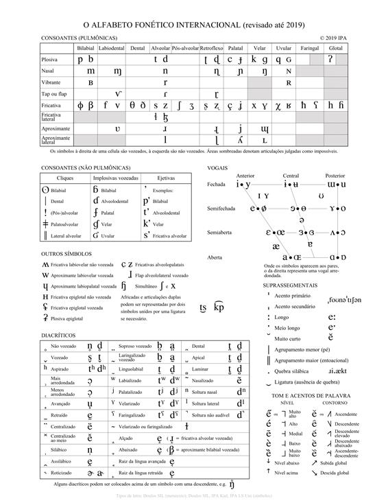
Libras
A língua de sinais vai parecer com a voz humana. Reduzindo a quantidade de palavras.
LIBRAS EM ESPERANTO
Olá!
Queria unir
todos os surdos do mundo para criar uma libra que unificasse todos os surdos do
mundo!
Poderiam me
ajudar nesse projeto?
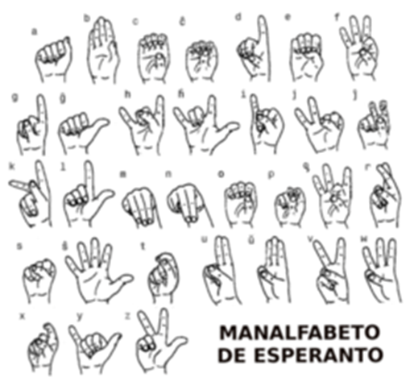
Curso de Esperantoskribo para cegos (Braile)
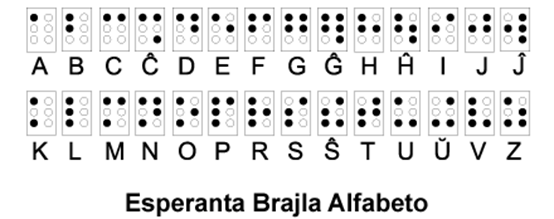
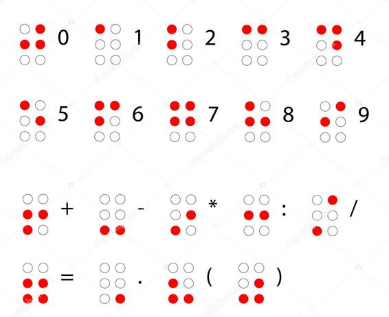
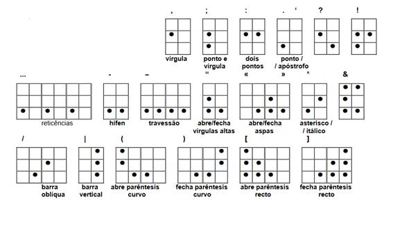
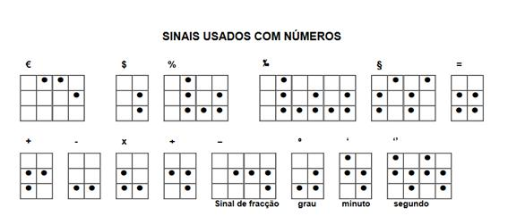
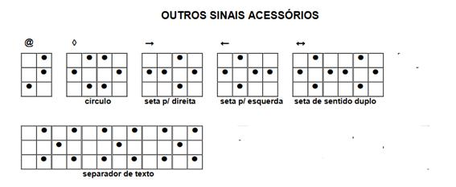
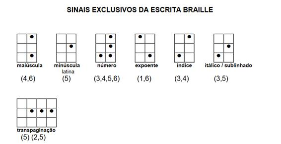
Obs: Esperantoskript não é Esperanto.
O
"Esperantoskript" usa o Esperanto como Tradutor igual ao
Google Translate (o método do Google Translate é o mais eficiente).
Facilitando a "tradução" instantânea em Idiomas
diferentes.
Exemplo:
Ao invés de: Português -> Inglês -> Japonês
Na "teoria" não sai perfeito
Então: Português -> Esperantoskript -> Japonês
Na "Teoria" sairá melhor.
Por exemplo:
A carta de Einstein a Deus:
...
I read a great deal in the last days of your book, and thank you very
much for sending it to me. What especially struck me about it was
this. With regard to the factual attitude to life and to the human
community we have a great deal in common.
... The word God is
for me nothing more than the expression and product of human
weaknesses, the Bible a collection of honorable, but still primitive
legends which are nevertheless pretty childish. No interpretation no
matter how subtle can (for me) change this. These subtilised
interpretations are highly manifold according to their nature and
have almost nothing to do with the original text. For me the Jewish
religion like all other religions is an incarnation of the most
childish superstitions. And the Jewish people to whom I gladly belong
and with whose mentality I have a deep affinity have no different
quality for me than all other people. As far as my experience goes,
they are also no better than other human groups, although they are
protected from the worst cancers by a lack of power. Otherwise I
cannot see anything 'chosen' about them.
In general I find it
painful that you claim a privileged position and try to defend it by
two walls of pride, an external one as a man and an internal one as a
Jew. As a man you claim, so to speak, a dispensation from causality
otherwise accepted, as a Jew the privilege of monotheism. But a
limited causality is no longer a causality at all, as our wonderful
Spinoza recognized with all incision, probably as the first one. And
the animistic interpretations of the religions of nature are in
principle not annulled by monopolization. With such walls we can only
attain a certain self-deception, but our moral efforts are not
furthered by them. On the contrary.
Now that I have quite openly
stated our differences in intellectual convictions it is still clear
to me that we are quite close to each other in essential things, i.e;
in our evaluations of human behavior. What separates us are only
intellectual 'props' and 'rationalization' in Freud's language.
Therefore I think that we would understand each other quite well if
we talked about concrete things.
With friendly thanks and best
wishes,
Yours, A. Einstein
Traduzido para o Esperantoskribo:
...
[Mi;] [legis;] [multe;] [en;] [la;] [lastay;] [tagoy;] [de;] [via;]
[libro;], [kaj;] [dankas;] [vin;] [tre;] [multe;] [por;] [sendi;]
[gxin;] [al;] [mi;]. [Kio;] [speciale;] [trafis;] [min;] [pri;]
[gxi;], [estis;] [yena;]. [Koncerne;] [al;] [la;] [faktay;]
[sinteno;] [al;] [la;] [vivo;] [kaj;] [al;] [la;] [homa;] [komunumo;]
[ni;] [havas;] [multon;] [komunan;].
... [La;] [vorto;] [Dio;]
[estas;] [por;] [mi;] [nenio;] [pli;] [ol;] [la;] [esprimo;] [kay;]
[produkto;] [de;] [homa;] [malfortoyn;], [la;] [Biblio;] [estas;]
[kolekto;] [de;] [estimata;], [sed;] [ankoraw;] [primitiva;]
[legendoy;] [kiuy;] [estas;] [tamen;] [bela;] [infana;]. [Neniu;]
[interpreto;] [ne;] [gravas;] [kiom;] [subtila;] [povas;] ([por;]
[mi;]) [sxangxi;] [tion;]. [Tiuy;] [subtilised;] [legoy;] [estas;]
[tre;] [dukto;] [law;] [ilia;] [naturo;] [kay;] [havas;] [preskaw;]
[nenion;] [por;] [fari;] [kun;] [la;] [originala;] [teksto;]. [Por;]
[mi;] [la;] [yuda;] [religio;] [kiel;] [cxiuy;] [aliay;] [religioy;]
[estas;] [enkarnigxo;] [de;] [la;] [pley;] [infanecay;]
[supersticxoy;]. [Kay;] [la;] [yuda;] [popolo;], [al;] [kiu;] [mi;]
[volonte;] [apartenus;] [kay;] [kun;] [kies;] [pensmaniero;] [mi;]
[havas;] [profundan;] [afinecon;] [ne;] [havas;] [malsaman;]
[kvaliton;] [por;] [mi;] [ol;] [cxiu;] [alia;] [popolo;]. [Koncerne;]
[mian;] [sperton;] [iras;], [ili;] [estas;] [ankaw;] [pli;] [bona;]
[ol;] [aliay;] [homay;] [grupoy;], [kvankam;] [ili;] [estas;]
[protektita;] [de;] [la;] [pley;] [malbonay;] [kanceroy;] [de;]
[manko;] [de;] [potenco;]. [Alie;] [mi;] [ne;] [povas;] [vidi;]
[ion;] "[elektitay;]" [pri;] [ili;].
[Gxenerale;]
[mi;] [trovas;] [gxin;] [doloray;], [ke;] [vi;] [asertas;]
[privilegiita;] [pozicio;] [kay;] [provi;] [defendi;] [gxin;] [per;]
[du;] [muroy;] [de;] [fiero;], [ekstera;], [kiel;] [homo;] [kay;]
[interna;] [unu;] [kiel;] [Judo;]. [Kiel;] [homo;] [vi;] [asertas;],
[por;] [tiel;] [diri;], [oni;] [pardonas;] [el;] [kawzeco;] [alie;]
[akceptita;], [kiel;] [Judo;] [la;] [privilegion;] [de;]
[monoteismo;]. [Sed;] [limigita;] [kawzeco;] [ne;] [plu;] [estas;]
[kawzeco;] [tute;] [ne;], [kiel;] [nia;] [mirinda;] [Spinoza;]
[rekonita;] [kun;] [cxiuy;] [incision;], [probable;] [kiel;] [la;]
[unua;]. [Kaj;] [la;] [animista;] [legoy;] [de;] [la;] [religioy;]
[de;] [naturo;] [estas;] [en;] [komenco;] [ne;] [nuligita;] [de;]
[monopolizacion;]. [Kun;] [tiay;] [muroy;] [ni;] [povas;] [nur;]
[atingi;] [iun;] [autoengano;], [sed;] [nia;] [morala;] [penoj;]
[ne;] [dawrigis;] [per;] [ili;]. [Kontrawe;].
[Nun;], [ke;]
[mi;] [suficxe;] [malkase;] [deklaris;] [niay;] [diferencoy;] [en;]
[intelekta;] [konvinkoy;] [estas;] [ankoraw;] [klara;] [al;] [mi;]
[ke;] [ni;] [estas;] [tre;] [proksimay;] [unu;] [al;] [la;] [alia;]
[en;] [la;] [esencay;] [aferoy;], [te;], [en;] [nia;] [evaluaciones;]
[de;] [homa;] [konduto;]. [Kion ;][disigas;] [ni;] [estas;] [nur;]
[intelekta;] '[kolonoj;]' [kaj;] '[raciigo;]' [en;] [Freud;]
[lingvo;]. [Tial;] [mi;] [opinias;] [ke;] [ni;] [devus;] [kompreni;]
[unu;] [la;] [alian;] [suficxe;] [bone;] [se;] [ni;] [parolis;]
[pri;] [konkretay;] [ajoy;].
[Kun;]
[amikay;] [dankon;] [kay;] [bondeziroyn;],
[Via;], [A;].
[Einstein;]
Para o Html
<!DOCTYPE
HTML>
<meta charset="UTF-8">
<html
lingvo="Esperantoskribo">
<head>
<title>[Einstein;]
[leteron;] [al;] [Dio;]:</title>
</head>
<body>
<p>... [Mi;]
[legis;] [multe;] [en;] [la;] [lastay;] [tagoy;] [de;] [via;]
[libro;], [kaj;] [dankas;] [vin;] [tre;] [multe;] [por;] [sendi;]
[gxin;] [al;] [mi;]. [Kio;] [speciale;] [trafis;] [min;] [pri;]
[gxi;], [estis;] [yena;]. [Koncerne;] [al;] [la;] [faktay;]
[sinteno;] [al;] [la;] [vivo;] [kaj;] [al;] [la;] [homa;] [komunumo;]
[ni;] [havas;] [multon;] [komunan;].</p>
<p>...
[La;] [vorto;] [Dio;] [estas;] [por;] [mi;] [nenio;] [pli;] [ol;]
[la;] [esprimo;] [kay;] [produkto;] [de;] [homa;] [malfortoyn;],
[la;] [Biblio;] [estas;] [kolekto;] [de;] [estimata;], [sed;]
[ankoraw;] [primitiva;] [legendoy;] [kiuy;] [estas;] [tamen;] [bela;]
[infana;]. [Neniu;] [interpreto;] [ne;] [gravas;] [kiom;] [subtila;]
[povas;] ([por;] [mi;]) [sxangxi;] [tion;]. [Tiuy;] [subtilised;]
[legoy;] [estas;] [tre;] [dukto;] [law;] [ilia;] [naturo;] [kay;]
[havas;] [preskaw;] [nenion;] [por;] [fari;] [kun;] [la;]
[originala;] [teksto;]. [Por;] [mi;] [la;] [yuda;] [religio;] [kiel;]
[cxiuy;] [aliay;] [religioy;] [estas;] [enkarnigxo;] [de;] [la;]
[pley;] [infanecay;] [supersticxoy;]. [Kay;] [la;] [yuda;] [popolo;],
[al;] [kiu;] [mi;] [volonte;] [apartenus;] [kay;] [kun;] [kies;]
[pensmaniero;] [mi;] [havas;] [profundan;] [afinecon;] [ne;] [havas;]
[malsaman;] [kvaliton;] [por;] [mi;] [ol;] [cxiu;] [alia;] [popolo;].
[Koncerne;] [mian;] [sperton;] [iras;], [ili;] [estas;] [ankaw;]
[pli;] [bona;] [ol;] [aliay;] [homay;] [grupoy;], [kvankam;] [ili;]
[estas;] [protektita;] [de;] [la;] [pley;] [malbonay;] [kanceroy;]
[de;] [manko;] [de;] [potenco;]. [Alie;] [mi;] [ne;] [povas;] [vidi;]
[ion;] "[elektitay;]" [pri;] [ili;].</p>
<p>[Gxenerale;]
[mi;] [trovas;] [gxin;] [doloray;], [ke;] [vi;] [asertas;]
[privilegiita;] [pozicio;] [kay;] [provi;] [defendi;] [gxin;] [per;]
[du;] [muroy;] [de;] [fiero;], [ekstera;], [kiel;] [homo;] [kay;]
[interna;] [unu;] [kiel;] [Judo;]. [Kiel;] [homo;] [vi;] [asertas;],
[por;] [tiel;] [diri;], [oni;] [pardonas;] [el;] [kawzeco;] [alie;]
[akceptita;], [kiel;] [Judo;] [la;] [privilegion;] [de;]
[monoteismo;]. [Sed;] [limigita;] [kawzeco;] [ne;] [plu;] [estas;]
[kawzeco;] [tute;] [ne;], [kiel;] [nia;] [mirinda;] [Spinoza;]
[rekonita;] [kun;] [cxiuy;] [incision;], [probable;] [kiel;] [la;]
[unua;]. [Kaj;] [la;] [animista;] [legoy;] [de;] [la;] [religioy;]
[de;] [naturo;] [estas;] [en;] [komenco;] [ne;] [nuligita;] [de;]
[monopolizacion;]. [Kun;] [tiay;] [muroy;] [ni;] [povas;] [nur;]
[atingi;] [iun;] [autoengano;], [sed;] [nia;] [morala;] [penoj;]
[ne;] [dawrigis;] [per;] [ili;]. [Kontrawe;].</p>
<p>[Nun;],
[ke;] [mi;] [suficxe;] [malkase;] [deklaris;] [niay;] [diferencoy;]
[en;] [intelekta;] [konvinkoy;] [estas;] [ankoraw;] [klara;] [al;]
[mi;] [ke;] [ni;] [estas;] [tre;] [proksimay;] [unu;] [al;] [la;]
[alia;] [en;] [la;] [esencay;] [aferoy;], [te;], [en;] [nia;]
[evaluaciones;] [de;] [homa;] [konduto;]. [Kion ;][disigas;] [ni;]
[estas;] [nur;] [intelekta;] '[kolonoj;]' [kaj;] '[raciigo;]' [en;]
[Freud;] [lingvo;]. [Tial;] [mi;] [opinias;] [ke;] [ni;] [devus;]
[kompreni;] [unu;] [la;] [alian;] [suficxe;] [bone;] [se;] [ni;]
[parolis;] [pri;] [konkretay;] [ajoy;].
[Kun;]
[amikay;] [dankon;] [kay;] [bondeziroyn;],</p>
<p>[Via;],
[A;]. [Einstein;]</p>
</body>
</html>
Para o português:
...
Eu lido muito nos últimos dias de seu livro, e muito obrigado por
enviá-lo para mim. O que sobretudo me impressionou foi essa. Com
relação à atitude factual para a vida e para a comunidade humana
que temos muito em comum.
... A palavra Deus é para mim nada
mais que a expressão e produto da fraqueza humana, a Bíblia uma
coleção de lendas honradas, mas ainda primitivas, que são, no
entanto, muito infantil. Nenhuma interpretação, não importa quão
sutil pode (para mim) mudar isso. Essas interpretações são
altamente subtilised colector de acordo com a sua natureza e não tem
quase nada a ver com o texto original. Para mim, a religião judaica,
como todas as outras religiões é uma encarnação das superstições
mais infantis. E o povo judeu, a quem eu pertenço alegremente e com
cuja mentalidade tenho uma profunda afinidade não têm qualidade
diferente para mim do que todas as outras pessoas. Tanto quanto minha
experiência, elas são também não é melhor do que outros grupos
humanos, embora sejam protegidas dos piores cancros por uma falta de
energia. Caso contrário, eu não consigo ver nada 'escolhido' sobre
eles.
Em geral acho que é dolorosa que você reivindicar uma
posição privilegiada e tentar defendê-la por duas paredes de
orgulho, um externo como um homem e um interno como um judeu. Como um
homem você diz, por assim dizer, a dispensa da causalidade
disposição em contrário, como um judeu o privilégio de
monoteísmo. Mas uma causalidade limitado não é mais uma
causalidade de todo, como o nosso Spinoza maravilhoso reconhecido com
toda incisão, provavelmente como a primeira. E as interpretações
das religiões animistas da natureza são, em princípio, não
anulada pelo monopolização. Com essas paredes só podemos alcançar
uma certa auto-engano, mas os nossos esforços morais não são
promovidos por eles. Pelo contrário.
Agora que eu tenho
bastante declarou abertamente as nossas diferenças em convicções
intelectuais ainda é claro para mim que estamos bastante próximos
uns dos outros nas coisas essenciais, ou seja, em nossas avaliações
do comportamento humano. O que nos separa são apenas intelectuais
"adereços" e "racionalização" na linguagem de
Freud. Portanto, eu acho que nós entendemos muito bem, se nós
falamos sobre coisas concretas.
Com agradecimentos e
cumprimentos amigáveis,
Yours, A. Einstein
Obs: Este texto foi tirado da página:
http://daterraparaasestrelas.blogspot.com.br/2012/10/carta-de-einstein-sobre-deus-god-letter.html
Foi traduzido para o Google Translate no dia 04/12/2012 às 20:37.
Meu Apelido |
Como não sou inventor de um Idioma Matemático, pois existe um Idioma Matemático - o Esperanto - ao invés de me chamarem Jorge queria um apelido carinhoso: Georgo (em português: Gueôrgo) |
Em português: <span lingvo="portugala">Eu te amo</span>
Em inglês: I love you. - <span lingvo="angla">I love you.</span>
Em espanhol: Yo te amo - <span lingvo="hispana">Yo te amo</span>
Em italiano: Io ti amo - <span lingvo="itala">Io ti amo</span>
Em francês: Je t'aime - <span lingvo="franca">Je t'aime</span>
Em alemão: Ich liebe dich - <span lingvo="germana">Ich liebe dich</span>
Obs: no exemplo abaixo, no caso do português, não é preciso colocar a e-tag [palabra;].
<!DOCTYPE
HTML>
<meta charset="UTF-8">
<html
lingvo="Esperantoskribo">
<esp
dualingvo="portugala">
<head>
<title>[Ekzemplo;]</title>
</head>
<body>
<p>[En;]
[Esperantoskribo;]: [Mi;] [estas;] [brazilano;] [kay;] [neniam;]
[rezigni;]</p>
<p>Em
Português: Sou brasileiro e não desisto nunca</p>
</body>
</html>
levar v. 1 (len:1) porti.2 (len:2)forporti.
bolada s.f. 1 (pancada com bola) (len:1) pilkobato,(len:2)pilkofrapo.2 (fig.) (len:3) multego da mono.
Exemplo:
Levei uma bolada.
Veja:
[Portis nnlen:1 ;] [pilkobato nnlen:1;].
A
fonética vai ser acrecentado:
- Fonética do Esperanto
e
-
Alfabeto Fonético Internacional
A Fonética do Esperanto não irá sofrer modificações, porém, o uso do Ĥ irá sofrer modificação. O Ĥ (ou HX) no Esperantoskribo terá o som de R, IGUAL ao H do Esperanto.
O Alfabeto Fonético Internacional (o Alfabeto falado no mundo inteiro) não irá sofrer modificações, pois não irá aparecer junto com o Esperantoskribo.
Download da Fonte |
Descrição |
afi.ttf |
AFI: sigla em esperanto: Alfabeto Fonetiko Internacia. |
O Sintetizador de Voz será baseado no Alfabeto Fonético Internacional.
O Identificador de Voz será baseado no Alfabeto Fonético Internacional.
Esperanto
TABELA
DE AFIXOS EM ESPERANTOSCRIPT
(Obs.: modificações do Esperanto
para o Esperantoscript).
PREFIXOS
BO
– parentesco por casamento: PATRO = pai; BOPATRO = sogro.
DIS
– dispersão: JETI = jogar, lançar; DISJETI = espalhar.
EK –
começo de ação: VIDI = ver; EKVIDI = avistar.
EKS - “ex”:
DIREKTORO = diretor; EKSDIREKTORO = ex-diretor.
FI – qualidade
moral má: VORTO = palavra; FIVORTO = palavrão.
GE – ambos os
sexos: PATRO = pai; GEPATROY = pais.
MAL – antônimos: GRANDA
= grande; MALGRANDA = pequeno.
PRA – remoto: PATRO = pai
PRAPATROY = antepassados.
RE – repetição: FARI = fazer;
REFARI = refazer.
SUFIXOS
ACX
– qualidade material má: DOMO = casa; DOMACXO = casebre.
AD –
ação continuada: EDUKI = educar; EDUKADO = educação.
AJ –
coisa: MANĜI = comer; MANCXAJO = comida (“coisa de comer”).
AN
– membro ou habilidade: KLUBO = clube; KLUBANO = associado.
AR
– coletivos: BOVO = boi; BOVARO = boiada.
EBL –
possibilidade: VIDI = ver; VIDEBLA = visível.
EC – qualidade
ou estado: BELA = belo; BELECO = beleza.
EG – aumentativos:
DOMO = casa; DOMEGO = casarão.
EY – lugar: BOVO = boi; BOVEJO
= curral (“lugar do boi”).
EM - tendência, inclinação:
KREDI = crer; KREDEMA = crédulo.
END – obrigatoriedade: FARI
= fazer; FARENDA = que deve ser feito.
ER – partícula,
fragmento: SABLO = areia; SABLERO = grão de areia.
ESTR –
chefe, dirigente: URBO = cidade; URBESTRO = prefeito.
ET –
diminutivos: DOMO = casa; DOMETO = casinha.
ID – descendente,
filhote: BOVO = boi; BOVIDO = bezerro.
IG – fazer, tornar:
BELA = belo; BELIGI = embelezar.
IGX – fazer-se, tornar-se:
BELA = belo; BELIGXI = embelezar-se.
IL – instrumento: TRANCXI
= cortar; TRANCXILO = faca.
IN – feminino: KNABO = menino;
KNABINO = menina.
IND – merecimento: VIDI = ver; VIDINDA =
digno de ser visto.
ING – recipiente parcial: KANDELO = vela;
KANDELINGO = castiçal.
ISM – doutrina: KRISTANO = cristão;
KRISTANISMO = Cristianismo.
IST – profissão ou oculpação:
DENTO = dente; DENTISTO = dentista.
OBL – numeral
multiplicativo: DU = dois; DUOBLO = o dobro.
ON – numeral
fracionário: DU = dois; DUONO = a metade.
OP – numeral
coletivo: DU = dois; DUOPO = uma dupla.
UY – recipiente total:
SUKERO = açúcar; SUKERUYO = açucareiro.
UL – indivíduo
caracterizado: NOVA = novo; NOVULO = um novato.
UM – sufixo
especial, indefinido: VENTO = vento; VENTUMI = abanar.
UM POUCO DE HISTÓRIA |
Ludwik Lejzer Zamenhof, por vezes aportuguesado como Lázaro Luiz Zamenhof (Zamenhof ou Ludoviko) (Białystok, 15 de dezembro de 1859 — Varsóvia, 14 de abril de 1917) foi um oftalmologista e filólogo judeu polonês. Criador do esperanto, a língua artificial mais falada e bem sucedida no mundo. Seus idiomas nativos eram o russo, iídiche e polonês, mas ele também era fluente em alemão. Posteriormente aprendeu francês, latim, grego, hebraico e inglês além de se interessar por italiano, espanhol e lituano. |
O ESPERANTO É REALMENTE FÁCIL? |
Sim!... principalmente e comparação com as línguas nacionais, como Inglês,, Francês, Espanhol, etc. |
O QUE É |
Língua internacional planejada, de fácil aprendizado, que tem por finalidade servir de meio de comunicação entre pessoas que falam idiomas diferente |
COMO É |
|
COMO USAR |
|
ESPERANTO / ESPERANTOSKRIPT 1) O Esperantoskript é uma nova regra para adaptar o Esperanto em páginas da Internet, Exemplo: Em Esperanto: bona frato – bom irmão Em Esperantoskript: [bona;] [frato;] O Esperantoskript usa a E-TAG [PALAVRA;] para separar uma palavra num idioma qualquer, de uma palavra em Esperanto. 2) Quando uma palavra não segue as regras do Esperanto tem outro artifício - as letras NN, exemplo: [PALAVRA NN SUFIXO;] 3) Nesta apostila, para diferenciar do ESPERANTO, todas as vezes que aparecer o ESPERANTOSKRIPT virá com uma tabela cinza. Igual a esta. |
Alfabeto
São 28 letras no alfabeto do Esperanto, sendo que todas tem um único som.
A (a), B (bô),C (tsô), Ĉ (tchô), D (dô), E (ê), F (fô), G (go), Ĝ (djô), H (rrô), Ĥ (h fortemente aspirado), I (i), J (iô → i ditongo), Ĵ (jô), K (kô), L (lô), M (mô), N (nô), O (ô), P (pô), R (rô), S (sô), Ŝ (chô), T (tô), U (u), Ŭ (uô → u ditongo), V (vô), Z (zô).
Alfabeto maiúsculo:
A, B,C, Ĉ, D, E, F, G, Ĝ, H, Ĥ, I, J, Ĵ, K, L, M, N, O, P, R, S, Ŝ, T, U, Ŭ, V, Z.
Alfabeto minúsculo:
a, b, c, ĉ, d, e, f, g, ĝ, h, ĥ, i, j, ĵ, k, l, m, n, o, p, r, s, ŝ, t, u, ŭ, v, z.
Chave da Pronúncia
1 – A, B, D, F, I, K, L, M, N, P, T, U, V, Z – soam como em português.
C – “ts”: LECIONO [letsiôno] – lição.
Ĉ – “tch” (de Tche Guevara): ĈEVALO [tcheválo] – cavalo.
E = “ê” (sempre “fechado”): BETO [beto] – beterraba
G = “g” sempre “duro” (como “guê”): GEOLOGO [gueolôgo] – geólogo.
Ĝ = “dj” (de adjetivo): ĜENTILA [djentila] – gentil.
H = “rr”: HELPI [rrêlpi] – ajudar, socorrer.
J = “i”: (em ditongos): PAJLO [pai-lo] – palha.
Ĵ = “j” protuguês: ĴURNALO [jurnálo] – jornal.
O = “ô” (sempre “fechado”): LOKO [lôko] – lugar.
R = “r” (sempre “fraco”): RIVERO [rivêro] – rio.
S = “s” (sempre como “ss”): SESA [sêssa] – sexto.
Ŝ = “ch” ŜIPO [chipo] – navio.
Ŭ = “u” (em ditongos): FRAŬLO [frau-lo] – solteiro.
OBS – M, N – não devem nasalizar demasiado a vogal precedente.
Exs: AMO [á-mo] – amor; KANTO [kánto] – canto, canção.
NASALIZAÇÃO – Em Esperanto, não há sons nasalizados. Portanto, muito cuidado para não pronunciar o “a” como em elefante = elefãte, logo, a palavra “ELEFANTO” em esperanto, pronuncia-se elefá-nn-to.
Esperanto x Esperantoskribo
O Ĥ não será mais usado em Esperantoskribo.
A Fonética do Esperanto não irá sofrer modificações, porém, o uso do Ĥ irá sofrer modificação. O Ĥ (ou HX) no Esperantoskribo terá o som de R, IGUAL ao H do Esperanto.
Escrita = Fonética
ACENTO TÔNICO – Sempre na penúltima sílaba. Ex: MATEMATIKO [matematíko] – matemática.
SEMIVOGAIS (ditongos e hiatos) – Como em Esperanto as vogais (A, E, I, O, U), usa-se nos ditongos as semivogais “J” e “Ŭ” (u com braquia), que soam respectivamente, como “i” e “u”. Exs: PAJLO (pai-lo) – palha; FRAŬLO (frau-lo) – solteiro, Assim se essas palavras fossem escritas (erradamente) com “i” e “u” comuns, teríamos hiatos, e não ditongos, ou seja: “PAILO” (pa-í-lo) e “FRAULO” (fra-ú-lo).
Exemplos de ditongos: PAJLO (pai-lo) – palha; FRAŬLO (frau-lo) – solteiro. Obs: o J e o Ŭ o som é mais fraco.
Exemplos de hiatos: ALIAJ (a-lí-ai) – outros/as; PREMIO (pre-mí-o) – prêmio. Obs: o I e o U o som é mais forte.
ACENTOS GRÁFICOS NA INTERNET – No computador, usa-se uma “fonte” apropriada para as letras do Esperanto. Mas, no envio de mensagens pela Internet, muitos preferem substituir o acento gráfico por um “H” ou um “X”. Assim, por exemplo, “ĈEVALO” (= cavalo), nesse caso, pode-se escrever: “CHEVALO” ou “CXEVALO”. No caso do “Ŭ” (u com braquia), pode-se simplesmente omitir a braquia ou substituí-la pelo “X” Assim, por exemplo a palavra “ANKAŬ” (= também), neste caso, pode-se escrever: “ANKAU” ou “ANKAUX”. Mas na escrita manual, a braquia é uma espécie de “meia-lua” sobre o “U”, (ou seja – “Ŭ”).
SEPARAÇÃO DE SÍLABAS – Em Esperanto, a divisão de palavras, em fim de linha é livre. Mas para facilitar a leitura, pode-se dividir a palavra respeitando-se as sílabas como em Português.
Ex: LERNANTO (= ler-nan-to) – aluno.
As Semivogais de Esperanto para Esperantoskribo:
De J para Y De Ŭ para W
Mudança: De Ĵ para J
O Esperantoskribo terá Digrafos:
De Ĉ para CX De Ĝ para GX De Ĥ para HX De Ŝ para SX
O Ĥ (ou HX) no Esperantoskribo terá o som de R, IGUAL ao H do Esperanto. |
As 15 regras fundamentais do Esperanto
Artigo – Definido: LA (= o, a, os, as); Indefinido: não há.
A palavra "la" é o artigo definido em Esperanto, significando "o, a, os, as". Por exemplo: la patroj (os pais); la granda leono (o grande leão); la kampoj (os campos).
Em Esperanto, não há artigo indefinido. A indeterminação é marcada simplesmente pela ausência do artigo definido.
Masculino: O |
Feminino: INO |
Coisas ou objeto: ENO |
Plural: J |
Em Esperantoskribo o Plural do Substantivo será terminado por: Y |
|||
OBJETOS – em Esperantoskribo: podemos classificar os objetos, exemplo: LIBRO - livro, que não é nem masculino e nem feminino, para classificar um objeto colocamos o sufixo ENO no substantivo, exemplo: LIBRO - [LIBRO NN EN;] |
|||
APELIDOS - em Esperantoskribo: para simplificar os apelidos no Esperantoskribo usa-se o sufixo TO no masculino e TINO para o feminino, exemplo: [JOÃOZINHO NN TO;] para masculino, [MARIAZINHA NN TINO;] |
|||
NOMES PRÓPRIOS – Os nomes próprios de pessoas podem ser mantidos nas línguas originais. Ex.: Masculinos: [João nn o;] Feminino: INO: [Maria nn ino;] Nomes completos: [Pedro Álvares Cabral nn o;] |
|||
Classificação de Coisas e ObjetosEm Esperantoskribo: podemos classificar os objetos, exemplo: LIBRO - livro, que não é nem masculino e nem feminino, para classificar um objeto colocamos o sufixo ENO no substantivo Livro - Libreno |
Classificação dos Plurais dos Substantivos em EsperantoskriboEm Esperantoskribo, a Classificação dos Plurais dos Substantivos, acrescenta-se a letra y, exemplos: Jovens - Junuloy |
8.
Adjetivo – Terminação A;
9.
Advérbios Derivados – Terminação E.
10. Numerais - em Esperantoskribo vide o próximo menu:
0
- NULO |
11
– UNUDEK UNU |
10
– UNUDEK |
100
– UNUCENT |
Pronomes
Pronomes Pessoais |
Pronomes Possessivos |
MI – eu VI – você ou vocês LI – ele ŜI – [SXI;] – ela ĜI – [GXI;] – ele / ela (Neutro) NI – nós VI – vocês ou você ILI – eles ou elas |
MIA – meu / minha VIA – seu / sua (= de você ou de vocês) LIA – seu / sua (= dele) ŜIA – [SXIA;] – seu / sua (= dela) ĜI – [GXIA;] – ele / ela (Neutro) NIA – nosso / nossa VIA – seu / sua (= de você ou de vocês) ILIA – seu / sua (= deles ou delas) |
Preposições – é a palavra invariável que liga duas outras palavras estabelecendo relações de sentido de dependência. Não tem sufixo, ex: EN LA ĈAMBRO
Escrita – É fonética
3. Acento Tônico – Sempre na PENÚLTIMA SÍLABA.
4. Palavras Compostas – Coloca-se a raiz principal no fim. Ex: VIZIT-KARTO (= cartão de visita)
Negação – Não se usa o “NE” (= não) com outra palavra negativa, como “NENIO” (= nada). Ex: “Mi vidis nenion” - Eu não vi nada (Lit.: Eu vi nada).
Palavras “Internacionais” - São aceitas, também, em Esperanto. Ex: TELEFONO (= telefone); etc.
Apóstrofo – É permitido, principalmente, em poesias e canções. Ex: DE L' KOR' (lê-se: del kor) – do coração.
. |
PUNKTO |
Ponto |
, |
KOMO |
Vírgula |
; |
PUNKTOKOMO |
Ponto-e-vírgula |
? |
DEMANDA SIGNO |
Pontos de interrogação |
! |
EKKRIA SIGNO |
Pontos de exclamação |
( ) |
KRAMPOJ |
Parênteses |
‘ ’ |
CITILOJ UNU |
Aspas Simples |
“ ” |
CITILOJ DU |
Aspas duplas |
: |
DUPUNKTO |
Dois-pontos |
- |
DIVIDOSTREKO |
Hífen |
– |
HALTOSTREKO |
Travessão |
* |
ASTERISKO |
Asterisco |
’ |
APOSTROFO |
Apóstrofo |
... |
TRIPUNKTO |
Reticências |
ktp. |
(= kotopo) (= kaj tiel plu) |
etc. |
APÓSTROFO – É permitido, principalmente, em poesia e canções. Ex: DE L’ KOR’ (lê-se: “Del kor”) – do coração.
Exemplo de poesia:
SANTA LUĈIO
Sir
la mar’ brilas
Stel’ de arĝento...
Dolĉe
favoras
Ondoj kaj vento...
Dança
la barko
Kiel folio:
“Sankta Luĉio”...
“Sankta
Luĉio”...
– Saluton! Cxu
vi parolas en Esperanto? (Olá! Você fala em Esperanto:)
–
Pli-malpli! Mi estas (lernanto / lernantino) de Esperanto. Cxu
Kaj vi? (Mais ou menos! Eu sou aluno de Esperanto. E você?)
– Mi
estas eksterlanda (esperantisto / esperantistino). (Eu sou
estrangeiro que falo esperanto.)
– Mi nomiĝas
............................ . Cxu
Kaj vi? Cxu
Kiel vi nomiĝas? (Meu nome é ............................ . E você?
Como você chama?)
– Mi nomiĝas .............................
. Su Plezuron! (Meu nome
é ............................ . Prazer!)
– Su
Same! Cxu
Kiel vi fartas? (Como vai você?)
– Su (Bone,
dankon / Pli-malpli / Malbone)! Cxu
Kaj vi? (Bem, obrigado / Mais ou menos / Não estou bem)! E você?)
– (Bone,
dankon / Pli-malpli / Malbone)! (Bem, obrigado / Mais ou menos / Não
estou bem)!
– Su Nun
mi devas foriri! Su Ĝis
revido! (Agora devo ir embora! Até à vista!)
– Su
Ĝis! (Tchau!)
Su
SALUTON! - Olá! (ou: Oi!)
Su BONAN TAGON! - Bom dia! (ou: Boa
tarde!)
Su BONAN VESPERON! - Boa noite! (ao chegar)
Su
BONAN NOKTON! - Boa noite! (ao sair)
Su ĜIS REVIDO! - Até à
vista!
Su ĜIS!... - Até!... (ou Tchau!)
Su
BONE, DANKON! - Bem, obrigado!
Su PLI-MALPLI! - Mais ou menos!
Su MALBONE! - (Estou) mal! (Não estou bem!)
PALAVRAS COMPOSTAS
Nas palavras compostas:
A RAIZ PRINCIPAL É COLOCADO NO FIM.
De modo que a RAIZ ACESSÓRIO (acessória) serve para “qualificar” ou modificar a RAIZ PRINCIPAL.
Exemplo: FLOR-VAZO – vazo de flor (em vez de: FLORO-VAZO). O VAZO é a RAIZ PRINCIPAL e é colocado no fim.
Outros
exemplos:
SALA DE AULA => KLAS-ĈAMBRO
SALA DE ESPERA =>
ATENDO-ĈAMBRO
SALA DE JANTAR => MAĜO-ĈAMBRO
SALA DE
LEITURA => LEGO-ĈAMBRO
Mas, às vezes, mantém-se a terminação para facilitar a pronúncia. Ex.: LIBRO-BRETO (= prateleira de livro), pois o acessório é mantido (como “subtônica) na palavra composta. Ex.: VESPER-MANĜO (= jantar) pronuncia-se: “vespêr-mándjo” (e não: “vêsper-mándjo”). O hífen, entre as raízes, é útil mas não obrigatória.
ACUSATIVO
1 – OBJETO DIRETO – Na frase “O menino vê o leão” há três elementos importantes: o menino; o verbo (“vê”); e o leão. O “menino” é o Sujeito – Quem vê o leão? - (ou seja, é o elemento que faz a ação indicada pelo verbo; e o “leão” é o Objeto Direto – O menino vê o quê? – (ou seja, é o elemento que sofre a ação indicada pelo verbo). Em Português – em frases deste tipo – sabe-se que um elemento é o Sujeito porque ele é colocado antes do verbo; e sabe-se que o outro elemento é o Objeto Direto porque ele é colocado depois do verbo. Assim basta invertermos a ordem desses elementos para mudar o sentido da frase, ou seja: “O leão vê o menino”. Agora o Sujeito é o “leão”; e o Objeto Direto é o “menino”.
Acontece, porém, que nem todos os povos (como alguns orientais) usam em suas línguas, esta mesma ordem de colocação dos elementos na frase. Por isso, a fim de garantir a clareza do sentido para todos os povos, em Esperanto marca-se, com um “N” final, a palavra, ou palavras, que constituem o Objeto da oração, Exs.: La knabo vidas la leonon” - O menino vê o leão; “La leono vidas la knabon” – O leão vê o menino. Esse “N” representa o chamado acusativo (semelhante em Alemão e várias outras línguas), sendo esta, porém, a única forma de “Declinação” usada em Esperanto. E, observando bem as frases das lições em que ocorre o acusativo, o aluno logo começará a assimilar melhor este ponto mais “especial” do Esperanto. Note-se, finalmente, que o artigo definido (“LA”) é absolutamente invariável, pois nunca recebe o “N” do acusativo.
2 – ACUSATIVO DE DIREÇÃO - Normalmente não vai para o acusativo uma palavra precedida de preposição (pois se a palavra está regida de preposição, ela não é “Objeto Direto”, mas poderíamos dizer que ela é um “complemento preposicionado”), Ex.:“La birdo flugas en la ĉambro” - O pássaro voa no quarto. Pode-se, porém, usar o acusativo, mesmo após uma preposição, quando se quer indicar o movimento em direção a um alvo. Ex.: “La birdo flugas en la ĉambron” - O pássaro voa para dentro do quarto.
Recapitulando:
O
pássaro voa dentro do quarto – La birdo flugas em la ĉambro.
O
pássaro voa para dentro do quarto – La birdo flugas em la ĉambron.
Obs: Este uso de acusativo é pouco frequente.
3 – OMISSÃO DE PREPOSIÇÃO – Este é o terceiro e último emprego normal do acusativo, sendo também de pouca frequência. Acontece que (a exemplo do que ocorre em Português e várias outras línguas) pode-se, às vezes, omitir uma preposição que considere desnecessária à compreensão da frase. Em Esperanto porém essa omissão da preposição deve ser compensada com o emprego do acusativo, Ex.: “Mi laboras dum la tuta tago” - Eu trabalho durante o dia todo. Sem a preposição “DUM” (= durante), temos: “Mi laboras la tutan tagon” - Eu trabalho o dia todo.
REVISÃO
1
– OBJETO DIRETO:
(Observação: pode-se alterar a ordem e a
frase continua o mesmo com a ajuda do “N”).
Mi
aĉetis libron
– Eu comprei
um livro
libron
aĉetis mi
– Eu comprei
um livro
aĉetis
mi libron
– Eu comprei
um livro
2
- ACUSATIVO DE DIREÇÃO
=>
La birdo estas em la kaĝo – O pássaro está (dentro da) gaiola
=> La birdo estas em la karĝon – O pássaro está (indo para a) gaiola
3
– OMISSÃO DA PREPOSIÇÃO
Mi laboras tutan
tagon – Eu trabalho o dia
todo
Mi laboras dum la tuta tago – Eu trabalho durante
o dia todo
Verbos em Inglês (compare)
Infinitive |
to earn |
|
Gerund |
earning |
|
Participle |
earned |
|
Imperative |
Earn! |
|
|
||
|
Active Voice |
Passive voice |
Simple Present |
John earns a book. |
A book is earned by John. |
Simple Past |
John earned a book. |
A book was earned by John. |
Simple Future (will) |
John will earn a book. |
A book will be earned by John. |
Simple Future (be going to) |
John is going to earn a book. |
A book is going to earned by John. |
|
||
Present Continuous |
John is earning a book. |
A book is being earned by John. |
Past Continuous |
John was earning a book. |
A book was being earned by John. |
Future Continuous (will) |
John will be earning a book. |
A book will be being earned by John. |
Future Continuous (be going to) |
John is going to be earn a book. |
A book is going to be being earned by John. |
|
||
Present Perfect |
John has earned a book. |
A book has been earned by John. |
Past Perfect |
John had earned a book. |
A book had been earned by John. |
Future Perfect (will) |
John will have earned a book. |
A book will have been earned by John. |
Future perfect (be going to) |
John is going to have earned a book. |
A book is going to have been earned by John. |
|
||
Present Perfect Continuous |
John has been earning a book. |
A book has been being earned by John. |
Past Perfect Continuous |
John had been earning a book. |
A book had been being earned by John. |
Future Perfect continuous (will) |
John will have been earning a book. |
A book will have been being earned by John. |
Future Perfect continuous (be going to) |
John is going to have been earning a book. |
A book is going to have been being earned by John. |
|
||
Future in the Past (would) |
John would earn a book. |
A book would be earned by John. |
Future in the Past (was going to) |
John was going to earn a book. |
A book was going to be earned by John. |
|
||
Used to |
John used to earn a book. |
A book used to be earned by John. |
Would Always |
John would always earn a book. |
A book would always be earned by John. |
Negaive |
John did not earn a book. |
Interrogative |
Did John earn a book? |
CONJUGAÇÃO VERBAL - Em Esperanto, a conjugação verbal é a mais fácil possível, pois com apenas 6 terminações, podemos conjugar qualquer verbo, em todos os tempos simples. Acontece que, em Esperanto, todos os verbos terminam:
No Infinitivo, em "I". Ex.: PAROLI - falar.
No Presente todos os verbos terminam em "AS" - para todas pessoas. Ex.: MI PAROLAS - eu falo; VI PAROLAS - você fala ou vocês falam; etc.
No passado, todos os verbos terminam em "IS". Ex.: Mi PAROLIS - eu falei; etc.
OBS:
O Passado do Esperanto pode equivaler aos nossos três Passados:
1.
Pretérito Perfeito
2. Pretérito Imperfeito
2. Pretérito
Mais-que-perfeito.
No Futuro (= Futuro do Presente) a terminação é "OS". Ex.: MI PAROLOS - eu falarei; etc.
No Condicional (= Futuro do Pretérito) a terminação é "US". Ex.: MI PAROLUS - eu falaria; etc.
Finalmente, no Imperativo, a terminação é "U". Ex.: PAROLU! - fale!; o falem! etc.
Infinitivo: I (ex: AMI = amar); |
Presente AS (ex: AMAS) |
|
Mi amas |
Eu amo |
Vi amas |
Você ama |
Li amas |
Ele ama. |
Passado: IS (ex: AMIS) |
Junta todos os Pretéritos: Pretérito Perfeito, Pretérito Imperfeito e Pretérito Mais-que-perfeitos |
ex: MI AMIS (eu amei, eu amava ou eu amara) |
Futuro OS (ex: AMOS) |
|
Mi amos |
Eu amarei |
Vi amos |
Você amarás |
Li amos |
Ele amará |
Condicional US (ex: AMUS) |
|
Mi amus |
Eu amaria |
Vi amus |
Você amaria |
Li amus |
Ele amaria |
Imperativo: U |
AMU! - Ame! Amem! |
PARTICÍPIOS ATIVOS E PARTICÍPIOS PASSIVOS
PARTICÍPIOS
ATIVOS – Em
Esperanto há 3 Particípios Ativos, formados com os sufixos ANT
(Presente), INT (Passado) e ONT (Futuro), cujas vocais
características (A, I, O) lembram, respectivamente, as dos
correspondentes Tempos Simples, ou seja: Presente (AS), Passado (IS)
e futuro (OS). Podemos ilustra o uso dos particípios com o verbo
“AMI” (= amar).
Exs.:
AMANTO
AMINTO
AMONTO
PARTICÍPIOS
PASSIVOS – Há,
também, 3 Particípios Passivos, formados com sufixos AT (Presente),
IT (Passado), OT (Futuro), cujas vogais características (A, I, O)
lembram, igualmente, as dos correspondentes Tempos Simples: Presente
(AS), Passado (IS) e Futuro (OS).
Exs.:
AMATO
AMITO
AMOTO
VERBOS AUXILIARES
ESTI (= ser ou estar) / KANTI (= cantar)
PARTICIPIO ATIVO
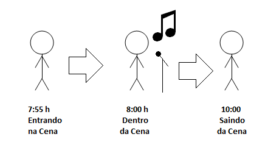
1)
Hodiaŭ je la 7:55 h la kantisto estas
kantonta la operon (= Hoje às
7:55, o cantor está para
cantar na ópera)
2) Hodiaŭ je la 8 horo la
kantisto estas kantanta
la operon (= Hoje às 8 horas, o cantor está
cantando na ópera)
3)
Hodiaŭ je la 10 horo la kantisto estas
kantinta la operon (= Hoje às 10
horas, o cantor tem cantado
na ópera)
1)
Hieraŭ je la 7:55 h la kantisto estis
kantonta la operon (= Ontem às
7:55, o cantor estava para
cantar na ópera)
2) Hieraŭ je la 8 horo la
kantisto estis kantanta
la operon (= Ontem às 8 horas, o cantor estava
cantando na ópera)
3)
Hieraŭ je la 10 horo la kantisto estis
kantinta la operon (= Ontem às
10 horas, o cantor tinha cantado
na ópera)
1)
Morgaŭ je la 7:55 h la kantisto estos
kantonta la operon (= Amanhã às
7:55, o cantor estará para
cantar na ópera)
2) Morgaŭ je la 8 h la
kantisto estos kantanta
la operon (= Amanhã às 8 horas, o cantor estará
cantando na ópera)
3)
Morgaŭ je la 10 h la kantisto estos
kantinta la operon (= Amanhã às
10 horas, o cantor terá cantado
na ópera)
PARTICIPIO PASSIVO
Obs: DE em Esperanto é igual a POR em português.
1)
Hodiaŭ je la 7:55 h la opero estas
kantota de la kantisto (= Hoje às
7:55, a ópera está para
ser cantado pelo cantor)
2) Hodiaŭ je la 8
horo la opero estas kantata
de la kantisto (= Hoje às 8 horas, a ópera está
sendo cantado pelo cantor)
3)
Hodiaŭ je la 10 horo la opero estas
kantita de la kantisto (= Hoje às
10 horas, a ópera está cantado
pelo cantor)
1)
Hieraŭ je la 7:55 h la opero estis
kantota kantisto (= Ontem às
7:55, na ópera estava para
ser cantado pelo cantor)
2) Hieraŭ je la
8 horo je la opero estis kantata
de la kantisto (= Ontem às 8 horas, a ópera estava
sendo cantado pelo cantor)
3)
Hieraŭ je la 10 horo je la opero estis
kantita de la kantisto (= Ontem
às 10 horas, a ópera foi
cantado pelo cantor)
1)
Morgaŭ je la 7:55 h la opero estos
kantota de la kantisto (= Amanhã
às 7:55, a ópera está para
ser cantado pelo cantor)
2) Morgaŭ je la
8 h la opero estos kantata
de la kantisto (= Amanhã às 8 horas, a ópera estará
sendo cantado pelo cantor)
3)
Morgaŭ je la 10 h la opero estos
kantita de la kantisto (= Amanhã
às 10 horas, a ópera será
cantado pelo cantor)
VERBOS CORRELATIVOS
Verbo Cantar
Passado IS ou TI
Presente AS ou TA
Futuro OS ou TO
Passado
|
Ontem
|
7:55
|
-IS-TO
|
KANTISTO
|
Ontem
|
8 hs
|
-IS-TA
|
KANTISTA
|
|
Ontem
|
10 hs
|
-IS-TI
|
KANTISTI
|
|
Presente
|
Hoje
|
7:55
|
-AS-TO
|
KANTASTO
|
Hoje
|
8 hs
|
-AS-TA
|
KANTASTA
|
|
Hoje
|
10 hs
|
-AS-TI
|
KANTASTI
|
|
Futuro
|
Amanhã
|
7:55
|
-OS-TO
|
KANTOSTO
|
Amanhã
|
8 hs
|
-OS-TA
|
KANTOSTA
|
|
Amanhã
|
10 hs
|
-OS-TI
|
KANTOSTI
|
Horas em Esperanto
As
horas inteiras em esperanto, ao contrário do português, são ditas
na forma ordinal. Assim, se em português é comum dizer-se “são
três horas” em esperanto, diz-se “é a terceira (hora)”. Estas
la tria. Por isso ao se perguntar, em esperanto “que horas são,
usa-se o interrogativo Kiom, na forma adjetiva:
– Kioma
horo estas?
– Estas la tria.
Na resposta, ao se
informar a hora, não há necessidade de repetir a expressão “horo”.
Já os minutos (e, também, os segundos) em esperanto são enunciados
na forma cardinal. Assim:
3:15 la tria kaj dek kvin
minutoj
3:20 la tria kaj dudek minutoj
3:30 la tria kaj
tridek minutoj
3:45 la tria kaj kvardek kivin minutoj
3:55
la tria kaj kvindek kvin minutoj
Finalmente, cabe esclarecer que as expressões “é meio-dia” e “é meia-noite” são ditas “estas tagmezo” e “estas noktomezo”.
COMO DIZER DATAS
Assim como as horas, as datas em esperanto são enunciadas na forma ordinal:
Em Esperanto – Hodiaŭ la 26-a de Julio. (Hoje é 26 de Julho)
Em Taypi – Hodiaw la 26-a de Messes. (Hoje é 26 de Julho)
Data completa em Taypi – Diasep la 26-a de Messes de 2025. (Sábado de 26 de Julho de 2025)
Por conseguinte, a maneira de se perguntar uma data será:
– Kioma tago estas hodiaŭ? (Que dia é hoje?)
Para saber o dia da semana, pergunta-se:
– Kiu
tago estas hodiaŭ? (Que semana é hoje?)
– Hodiaŭ estas
sabato. (Hoje é sábado.)
Português |
Esperanto |
Janeiro |
Mesunu |
Fevereiro |
Mesdu |
Março |
Mestri |
Abril |
Meskvar |
Maio |
Meskvin |
Junho |
Messes |
Julho |
Messep |
Agosto |
Mesok |
Setembro |
Mesnow |
Outubro |
Mesdek |
Novembro |
Mesdekunu |
Dezembro |
Mesdekdu |
Português |
Esperanto |
Domingo |
Diaunu |
segunda-feira |
Diadu |
terça-feira |
Diatri |
Quarta-feira |
Diakvar |
quinta-feira |
Diakvin |
Sexta-feira |
Diases |
Sábado |
Diasep |
Sábado, 15 de março de 2020 => 2020 Mestri 15, Diasep
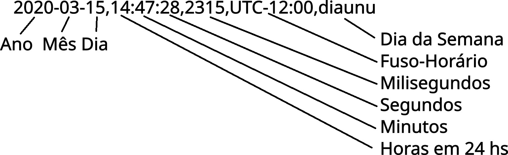 |
COMO PERGUNTAR A IDADE Pode-se perguntar a idade e uma pessoa por meio do verbo havi (ter) ou esti (ser). Em abos os casos, as expressões correspondentes equivalem às expressões portuguesas “Quantos anos você têm?” ou “Qual é sua idade?”. – Kiom da jaroj vi havas? (Quantos anos você tem?) – Mi havas tridek jarojn. (Eu tenho trinta anos.) – Kiomajara vi estas? – Mi estas tridekjara. (Eu estou com trinta anos.) – Kiomaĝa vi estas? – Mi estas tridekjara. (Eu estou com trinta anos.) |
NOMES DE PAÍSES
No Esperantoskripto sofrerá modificações:
Para formar o país usa-se a terminação: O
ISLANDO
- islândia
ANGOLO - Angola
ARGENTINO - Argentina
BRAZILO
- Brasil
ĈINIO - China
ARABIO - Arábia
DANIO -
Dinamarca
HINDIO - Índia
Para formar a nacionalidade usa-se a terminação: ANO
IRLANDANO
- irlandês
BRAZILANO - brasileiro
BOLIVIANO - boliviano
Em Esperantoscript (não é Esperanto), para indicar a língua ou o idioma usa-se a terminação: A
PORTUGALA
- Português (PORTUGALO - Portugal)
ANGLIA - Inglês
(ANGLIO - Inglaterra)
HISPANIA - Espanhol (HISPANIO - Espanha)
GRAU COMPARATIVO
Igualdade
=> tiel… kiel (tão
ou tanto.. como ou quanto)
Li estas tiel inteligenta kiel vi
(Ele é tão inteligente como você).
Superioridade
=> pli… ol (mais…
do que)
Vino estas pli bongusta ol
biero (Vinho é mais saboroso
do que cerveja).
Inferioridade
=> malpli… ol (menos…
do que)
Biero estas malpli bongusta ol vino (Cerveja é menos
saboroso do que vinho).
GRAU SUPERLATIVO
De
superioridade =>la plej… el
(o mais… de)
El ĉiuj ŝi
estas la plej bela (De todas ela é a mais bonita).
Ŝi estas la
plej bela el ĉiuj (Ela é a mais bonita de todas).
De
inferioridade =>la malplej… el
(o menos… de)
El ĉiuj
li estas la malplej inteligenta (De todos ele é o menos
inteligente).
Li estas la malplej inteligenta el ĉiuj (Ele é o
menos inteligente de todos).
Cxu em frases interrogativas
Usa-se
a palavra cxu em frases interrogativas.
Exemplo:
-
Você trabalha?
- Cxu vi laboras?
Palavras interrogativas em Esperantoskribo
Cxu
kiu
Cxu kiam
Cxu kie
Cxu kio
Su em frases exclamativas
Usa-se
a palavra su em frases exclamativas.
Exemplos:
-
Pare!
- Su havas!
São palavras exclamativas que servem para expressar emoções súbitas: Ai! Bis! Hem! Etc… Eis algumas interjeições mais usuais em Esperanto:
Su
adiaŭ! (adeus)
Su for! (fora)
Su ho! (oh)
Su ve! (que
desgraça)
Su aj! (ai)
Su ha! (ah)
Su hura! (hurra)
Su
ha lo! (alô)
Su bis! (bis)
Su he! (ei)
Su nu!
(então)
Su amen! (amém)
Su miaŭ! (miau)
Também existem palavras de outras categorias que funcionam como se fossem interjeições: Su atentu! (cuidado), Su antaŭen! (avante), Su bonege! (ótimo), Su dankon! (obrigado), Su jen! (olhe), Su helpon! (socorro), Su saluton! (oi), Su silentu! (silêncio) etc.
CONJUNÇÕES
São palavras que servem para ligar orações: Eu espero que você venha amanhã. Se não chover, irei até sua casa.
São as seguintes as conjunções em esperanto:
apenaŭ
(logo que)
ĉar (porque)
ĉu… ĉu (quer… quer ou seja…
seja)
dum (enquanto)
kaj (e)
kvankam (embora)
nek
(nem)
ol (do que)
sed (mas)
aŭ (ou)
ĉu (se =
conjunção integrante)
do (então, pois)
ĝis (até)
ke
(que)
kvazaŭ (como que)
nu (ora)
se (se = conjunção
condicional)
tamen (entretanto)
ADVÉRBIOS
Advérbio é a palavra invariável que modifica um verbo, um adjetivo ou um outro advérbio, exprimindo determinada circunstância (de lugar, de tempo, de modo etc.) Exemplos: Falar mal ela é muito bonita. Ele escreve muito mal.
Em Esperanto, existem dois tipos de advérbio: os primitivos e os derivados. São os seguintes os advérbios primitivos:
ajn
(quer que [seja])
ankaŭ (também)
apenaŭ (mal, apenas)
ĉi
(aproximação)
eĉ (até mesmo)
hieraŭ (ontem)
ja
(de fato)
jen (eis, eis aqui)
ju… des (quanto…
tanto)
kvazaŭ (como que)
nun (agora)
ne (não)
pli
(mais)
plu (mais = duração)
preskaŭ (quase)
tuj
(logo)
almenaŭ (ao menos)
ankoraŭ (ainda)
baldaŭ
(em breve, logo)
do (então)
for (longe, distante)
hodiaŭ
(hoje)
jam (já)
jes (sim)
ĵus (agora mesmo)
mem
(mesmo)
morgaŭ (amanhã)
nur (somente)
plej
(mais)
tro (demasiado)
tre (muito = intensidade)
O advérbio, em Esperanto, geralmente antecede a palavra que quer enfatizar:
Mi
tagmanĝos kun ŝi (Eu almoçarei com ela).
Nur mi tagmanĝos
kun ŝi (Somente eu [e não outra pessoa] almoçarei com ela).
Mi
nur tagmanĝos nur ŝi (Almoçarei somente com ela – e não com
outra pessoa).
Finalmente, cabe relembrar que os advérbios derivados são palavras de outras categorias que se transformaram em advérbios e são identificados pela terminação (e):
mateno (manhã) – matene (de manhã); bona (bom) – bone (bem)
PREPOSIÇÕES
A preposição é uma palavra que estabelece uma relação entre duas palavras: Livro de Pedro. Vou a Roma. Estive com Maria. É necessário esclarecer, entretanto, que o uso das preposições, em Esperanto, difere, em alguns casos, das línguas nacionais. Assim, em português, diz-se: “Viajarei com (em companhia de) minha esposa”, mas também “Escrevo com (por meio de lápis”. Em ambas as frases, usa-se a preposição “com”. Já em Esperanto, serão usadas duas preposições distintas: “Mi vojaĝo kun mia dezino”, mas “Mi skribas per krajono”.
Outros exemplos; “O livro de Pedro”, isto é, “pertencente a Pedro” (em Esperanto: “La libro de Petro”). “Viajarei de avião”, isto é, “por meio do avião” (em Esperanto: “Mi vojaĝos per aviadilo”). “O livro está na mesa”, isto é, “sobre a mesa” (em Esperanto: “La libro estas sur la tablo”). Mas, “O Livro está na gaveta”, ou seja, “dentro da gaveta” (em Esperanto: “La libro esttas em la tirkesto”). Veja, então, algumas preposições em Esperanto:
Al => a, para (em direção a): Mi iras al la urbocentro (Vou ao centro da cidade).
Anstataŭ => em lugar de, em vez de: S-ro Ludoviko preferas trinki bieron anstataŭ vino (O Sr. Luís prefere beber cerveja em lugar de vinho).
Antaŭ => diante de, antes de, há: Antaŭ la domo estas bela ĝardeno (Diante da casa há um belo jarim). La leciono finiĝas antaŭ la deka (A aula termina antes das dez). Antaŭ multaj jaroj, mi lernis Esperanton (Há muitos anos, eu aprendi esperanto).
Apud => próximo de, perto de: La klubo troviĝas apud la placo (O clube encontra-se próximo da praça).
Ĉe => junto de, em casa de, em: Ĉe la semaforoj la piedirantoj pacience atendas (Junto dos sinais de trânsito os pedestres aguardam pacientemente). Dimanĉe mi tagmanĝs ĉe mia patrino (Domingo almoçarei em casa de minha mãe).
Ĉirkaŭ => em torno de, cerca de, ao redor de: La Tero rondiras ĉirkaŭ la Suno (A Terra circula em torno do Sol). En la klasĉambro estas ĉirkaŭ dudek gelernantoj (Na sala de aula há cerca de vinte alunos).
Da => de (usa-se essa preposição após palavras que indiquem quantidade): Amaso da personoj estas em la plaĝo (Uma multidão de pessoas está na praia).
De =>
de (posse): La libro de Petro estas blanka. (O livro de Pedro é branco).
de (ponto de partida): Li foriras de la laborejo (Ele sai do trabalho).
de (característica): Mi iras al la kurso de Esperanto (Eu vou ao curso de Esperanto).
por (agente da passiva): Ŝi estas amata de la fianĉo (Ela é amada pelo noivo).
Dum => Durante: Ili restas em la lernejo dum la tuta tago (Eles ficam na escola durante o dia inteiro).
Ekster => fora de: La infanoj ludas ekster la domo (As crianças brincam fora de casa).
El =>
de (feito de): Ŝtuparo el ligno (Escada de madeira).
de (proveniente de): Li foriras el sia hejmo (Ele sai de sua casa).
En => em (dentro de): Li estas en la banĉambro (Ele está no banheiro). En la semajnfino mi iros al la plaĝo (No final de semana eu irei à praia).
Ĝis => até: Mi iras ĝis la urbocentro (Eu vou até o centro da cidade). Ŝi laboras e mateno ĝis vespero (Ela trabalha até a noite).
Inter => entre (no meio de): Ŝi estas inter mi kaj vi (Ela está entre mim e você). Mi estos ĉi tie inter la tria kaj la kvara (Eŭ estarei aqui entre 3 e 4 horas).
Je => preposição de sentido indefinido: Li vekiĝas je la sesa (Ele acorda às seis horas). Ŝi kredas je Dio (Ela acredita em Deus).
Kontraŭ => contra: Li agis kontraŭ mi (Ele agiu contra mim).
Krom => além de, exceto: Krom Karlo, ĉiuj venis al la festo (Exceto Carlos, todos vieram à festa). Krom biero, mi trinkas vinon (Além de cerveja, bebo vinho).
Kun => com (acompanhado de): Ŝi iras al la kinejo kun la edzo (Ela vai ao cinema com o marido). Mi trinkas lakton kun kafo (Bebo leite com café).
Laŭ => segundo, conforme: Dio kreis la homon laŭ sia bildo (Deus criou o homem segundo sua imagem).
Malgraŭ => apesar de: Malgraŭ la varmo, la labor-ĉambro estas agrabla (Apesar do calor, a sala de trabalho é agradável).
Per => por, com, de (por meio de): Mi vojaĝas per trajno (Eu viajo de trem). Ili skribas per krajono (Eles escrevem com lápis).
Po => à razão de: Veturi po cent kilometroj hore (Viajar a 100 Km/h).
Por => para, por (finalidade): Mi manĝas por vivi (Como para viver).
Post => depois de, atrás de: Post la tagmaĝo mi legas ĵurnalon (Depois do almoço leio jornal). La vagonaro venas post la lokomotivo (Os vagões vêm atrás da locomotiva).
Preter => ao lado de, por diante de, além de: La fervojo pasa preter la ŝoseo (A ferrovia passa ao lado da rodovia).
Pri => sobre, de (a respeito de): Leciono pri matematiko (Aula de matemática). Paroli pri aŭtomobiloj (Falar sobre automóveis).
Pro => por (por causa de): Ŝi ne venis pro la pluvo (Ela não veio por causa da chuva).
Sen => sem: La ĉielo estas sen nuboj (O céŭ está sem nuvens)
Sub => sob (debaixo de): La kato estas sub la lito (O gato está sob a cama).
Super => acima de: La birdo flugas super la domo (O pássaro voa acima da casa).
Sur => sobre, em (em cima de): La infano kuŝas sur la lito (A criança está deitada na cama). La libro estas sur la tablo (O livro está sobre a mesa).
Tra => por (através de): La ŝtelisto eniris tra la pordo (O ladrão entrou pela porta).
Trans => além de, do outro lado de: La suno malaperis trans la monto (O sol desapareceu além do monte)
Interrogativos
São palavras que servem para indicar que estamos fazendo uma pergunta. Veja os interrogativos empregados nesta lição:
Cxu Kiu significa “Quem?”, em geral, serve para individualizar:
– Cxu Kiu alvenas? (Quem chega?)
– La instruisto alvenas. (O professor chega.)
Cxu Kio significa “O que?”, em geral, refere-se a “coisas ou animais”:
– Cxu Kio sonoras? (O que toca?)
– La sonorileto sonoras. (A campainha toca.)
Cxu Kia significa “Como?”, no sentido de “de que qualidade, de que espécie”:
– Cxu Kia estas la tabulo? (Como é o quadro?)
– La tabulo estas nigra. (O quadro é negro.)
Cxu Kiel também significa “Como?”, mas no sentido de “de que maneira”:
– Cxu Kiel vi fartas? (Como você passa?)
– Mi fartas bone. (Eu passo bem.)
Cxu usado no começo de uma pergunta, que não é iniciada por um interrogativo específico (Kiu? Kio? Kia? Kiel?):
– Cxu vi parolas em Esperanto? (Você fala em Esperanto?)
– Ne, mi lernas. (Não, eu aprendo.)
Ekzercoj
Kiu / Kio / Kia / Kiel / Ĉu
(
ekzemplo:
Cxu li estas esperantisto? Jes, li estas esperantisto.
):
1) Cxu .................. eksplikas? La instruistro eksplikas.
2) Cxu .................. la gelernantoj atentas? Jes, la gelernantoj atentas.
3) Cxu .................. estas la tabulo? La tabulo estas verda.
4) Cxu .................. daŭras? La leciono daŭras.
5) Cxu .................. vi fartas? Bone, dankon.
Interrogativos
Cxu Kie (onde)– Cxu Kie vi laboras? (Onde você trabalha?)
– Mi laboras em oficejo. (Eu trabalho num escritório.)
Na 1ª lição foram vistos, entre outros, os interrogativos Kiu (quem, qual, que) e Kia (como). Ambos podem ser usados no plural (Kiuj e Kiaj). Isso ocorre quando, na resposta, a palavra a que eles se referem está no plural.
Exemplo:
– Cxu Kiuj alvenis?
– La gelernatoj.
Ekzercoj Kiu/ Kio/ Kia/ Kiel/ Kie/ Ĉu:
1) Cxu .................. vi loĝas? En malproksima kvartalo.
2) Cxu .................. vi iras via kvartalo? Per buso.
3) Cxu .................. ĝenerale troviĝas la oficejoj? En la urbocentro.
4) Cxu .................. ests via urbo? Ĝi esta granda.
5) Cxu .................. troviĝas em la klas-ĉambro? La gelernatoj.
Interrogativos
Cxu Kiam corresponde ao interrogativo “Quando?”
– Cxu Kiam vi iros al la urbocentro?
(Quando você irá ao centro da cidade?)
– Morgaŭ mi iros al la urbocentro. (Amanhã irei ao centro da cidade.)
Ekzercoj
Cxu Kiu / Cxu Kio / Cxu Kie / Cxu Kiel / Cxu Kia / Cxu Kiam / Cxu:
1) Cxu .................. estas la konstruaĵoj? Ili estas altaj.
2) Cxu .................. la birdoj bele kantas? Jes, la birdoj bele kantas.
3) Cxu .................. troviĝas sur la arboj? Sur la arboj troviĝas birdoj.
4) Cxu .................. loĝas em bela kaj agrabla kvartalo? S-ro Ludoviko.
5) Cxu .................. em la kvartalo estas banko? Ne, tie ne estas banko.
Interrogativos
Cxu Kies? De quem?:– Cxu Kies domo ĝi estas? (De quem é a casa?)
– De lapatro de S-ro Ludoviko. (Do pai do Sr. Luís.)
Cxu Kiom? Quando?:
– Cxu Kiom kostis via aŭtomobilo? (Quanto custou seu automóvel?)
Quando após o interrogativo Kiom vier um substantivou ou um adjetivo, deve-se a preposição da para ligar essas duas palavras:
– Cxu Kiom da lernantoj estas em la klasĉambro? (Quantos alunos há na sala de aula?)
Ekzercoj
Cxu Kiu / Cxu Kio / Cxu Kia / Cxu Kiel / Cxu Kie / Cxu Kiam / Cxu Kies / Cxu Kiom / Cxu:
1) Cxu .................. ili iris al la urbocentro? Hieraŭ.
2) Cxu .................. gejunuloj estas em la klubo? Multaj.
3) Cxu .................. televidilo estas ĝi? De S-ro Ludoviko.
4) Cxu .................. la domo estas granda? Jes, ĝi estas granda.
5) Cxu .................. pendas sur la muroj? Belaj pentrajoj.
Ekzercoj
Cxu Kiu / Cxu Kio / Cxu Kia / Cxu Kiel / Cxu Kie / Cxu Kiam / Cxu Kiom / Cxu Kies / Cxu:
1) Cxu .................. loĝas la bofilino? Proksime al la urbocentro.
2) Cxu .................. gefratoj ŝi havas? Ŝi havas du gefratojn.
3) Cxu .................. la onkio amas la genevojn? Jes, li tre amas ilin.
4) Cxu .................. patro estas li? Li estas patro de S-ro Ludoviko.
5) Cxu .................. jam mortis? La patrino kaj la bopatro de S-ro Ludoviko.
Interrogativos
Cxu Kial? Por que? (na pergunta):
– Cxu Kial la lernanto ne venis? (Por que o aluno não veio?)
Cxu Ĉar Porque (na resposta):
– Cxu Ĉar li estas malsana. (Porque ele está doente.)
Ekzercoj
Cxu Kiu / Cxu Kio / Cxu Kia / Cxu Kiel / Cxu Kie / Cxu Kiam / Cxu Kiom / Cxu Kies / Cxu Kial / Cxu:
1) Cxu ..................komeciĝas? La matenmannĝo.
2) Cxu .................. horo vi eklaboras? Je la oka.
3) Cxu ..................familio ĝi estas? Ĝi estas familio de S-ro Ludoviko.
4) Cxu .................. vi loĝas em domo? Ne, mi loĝas em apartamento.
5) Cxu .................. la gejunuloj estas gajaj? Ĉar sabato okazos balo.
Correlativos
Correlativos são palavras que exprimem uma relação mútua e podem ser usadas aos pares. Por exemplo, as palavras usadas para formular questões e que exigem respostas específicas diferentes dum sim ou não. "O quê?" exige uma resposta por "algo", "aquilo", "tudo" ou "nada". Os pares "onde/ ali", "quando/ sempre", "como/ assim" etc, são outros exemplos de correlativos. O esperanto tem uma maneira muito interessante e prática de construir seus correlativos: ao todo existem 45 correlativos, derivados de quatro prefixos e nove sufixos, com um "I" intercalar. Note-se que a série dos indefinidos, que são a base do sistema, não tem prefixo, começando diretamente por I- ("I"ndefinidos). Quatro destas séries são pronominais e/ou adjectivais e cinco são adverbiais. Assim, basta aprender o significado desses 13 afixos para ter acesso a todos os correlativos da língua. E vale a pena aprendê-las, visto que estas palavras simples constituem aproximadamente 10% de qualquer texto em esperanto.
Origem dos correlativos
É pouco conhecido o facto, que a ideia destes correlativos não é uma invenção genial do Zamenhof, ou para os seus detratores uma criação artificial. Surgiu directamente da observação da lista destas palavras em línguas naturais, como o em russo, a língua viva que preferia entre as que conhecia. Com efeito nesta língua complicada, cheia de declinações e excepções, estas palavras são de formação extraordinariamente regular. O génio manifestou-o sim, na sua escolha do melhor em cada um dos três grupos de línguas indo-europeias (neo-latinas, germânicas e eslavas).
Em russo a tabela é criada a partir dos interrogativos, enquanto que em esperanto ela é baseada nos indefinidos, que não têm prefixo. Nesta língua, em cada série de nove correlativos, quatro dos interrogativos começam por K, sete dos demonstrativos começam por T, oito dos negativos começam por NI e sete dos coletivos começam por VS (que em alfabeto cirílico se escreve BC). Os indeterminados obtêm-se juntando -TO aos interrogativos, base do sistema. Eis uma série: KTO? TOT, NIKTO, VSJAKIJ, KTO-TO.
Zamenhof escolheu para os interrogativos o K- russo que corresponde ao Q ou C nas línguas neo-latinas (como em português: qual, quanto, como, quando, ...) e ao WH do inglês (where, what, when, ...). Para os demonstrativos o T- russo, que corresponde ao TH nos correlativos ingleses (there, that, then, ...). Para os negativos escolheu o NI- russo, que corresponde ao NE- do esperanto (com um -N- intercalar para facilitar a pronúncia) e que também aparece nas línguas neo-latinas (nenhum, ninguém, nunca...). Para os coletivos (Ĉ) baseou-se na palavra italiana Ciascuno que se pronuncia [ĉiaskuno], na francesa CHaque e no eaCH inglês, enquanto que o C do alfabeto russo é relembrado.
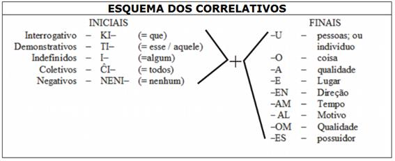
PESSOA / INDIVIDUALIDADE (-U) KIU
– quem; ou que (= qual) |
MODO (-EL) KIEL
– como (= de que modo) |
COISA (-O) KIO
– o que (=que coisa) |
TEMPO (-AM) KIAM
– quando |
QUALIDADE (-A) KIA
– como (= de que qualidade) |
MOTIVO (-AL) KIAL
– por que |
LUGAR (-E) KIE
– onde (em que lugar) |
QUALIDADE (-OM) KIOM
– quanto/a/s |
DIREÇÃO (-EN) KIEN
– aonde (= para onde) |
POSSUIDOR (-ES) KIES
– de quem; ou cujo/a/s |
Correlativos
|
ki- |
ti- |
i- |
ĉi- |
neni- |
-o |
kio – |
tio – |
io – |
ĉio – |
nenio – |
-u |
kiu – |
tiu – |
iu – |
ĉiu – |
neniu – |
-am |
kiam – |
tiam – |
iam – |
ĉiam – |
neniam – |
-a |
kia – |
tia – |
ia – |
ĉia – |
nenia – |
-e |
kie – |
tie – |
ie – |
ĉie – |
nenie – |
-el |
kiel – |
tiel – |
iel – |
ĉiel – |
neniel – |
-om |
kiom – |
tiom – |
iom – |
ĉiom – |
neniom – |
-al |
kial – |
tial – |
ial – |
ĉial – |
nenial – |
-es |
kies – |
ties – |
ies – |
ĉies – |
nenies – |
Resumão de Sintaxe
Período Simples
1) Objeto Direto
Maria comeu uma maçã.
Quem comeu a maçã?
Maria → Sujeito
Maria comeu o quê?
Uma maçã → Objeto Direto – sem preposição
[Maria nn ino;] [mangxis;] [la nn od;] [pomo nn od;]
2) Objeto Indireto
Eu preciso de roupa.
Quem precisa de roupa?
Eu → Sujeito
Eu preciso do que?
de roupa → Objeto Indireto – com preposição
[Mi;] [precizigas;] [de nn oi;] [vesto nn oi;]
3) Objeto Direto e Indireto
Eu dei um presente para você.
Eu dei o que?
Um presente → Objeto Direto – sem preposição
Para quem?
para você → Objeto Indireto – com preposição
[Mi;] [faris;] [donaco nn od;] [por nn oi;] [via nn oi;]
4) Verbo Intransitivo
O menino gritou. → Intransitivo
[La;] [knabo;] [blekis;]
5) Predicado Nominal
Maria é charmosa.
é → Verbo de ligação
charmosa → Predicativo do Sujeito
Verbos de ligação:
· SER= O carro é novo.
· ESTAR= João está feliz.
· PARECER= Joice parece cansada.
· PERMANECER= A moça permanece aflita.
· FICAR= Nicole ficou triste.
· CONTINUAR= Diana continua feliz.
· ANDAR= Maria anda nervosa.
[Maria n nino;] [estas;] [cxarmulino nn ps;]
6) Predicado Verbo-Nominal
O predicado Verbo-Nominal vem sempre seguido por um predicativo do sujeito.
Estrutura do Predicado Verbo-Nominal
O predicado verbo-nominal pode ser formado de:
1 - Verbo Intransitivo + Predicativo do Sujeito
Por Exemplo:
Joana |
partiu |
contente. |
Sujeito |
Verbo Intransitivo |
Predicativo do Sujeito |
[Joana nn ino;] [foriris;] [kontenta nn ps;]
2 - Verbo Transitivo + Objeto + Predicativo do Objeto
Por Exemplo:
A despedida |
deixou |
a mãe |
aflita. |
Sujeito |
Verbo Transitivo |
Objeto Direto |
Predicativo do Objeto |
[La;][adiawo;] [rezignis;] [la nn od;] [patrino nn od;] [afliktita nn po;]
3 - Verbo Transitivo + Objeto + Predicativo do Sujeito
Por Exemplo:
Os alunos |
cantaram |
emocionados |
aquela canção. |
Sujeito |
Verbo Transitivo |
Predicativo do Sujeito |
Objeto Indireto |
[La;] [gelernantoy;] [kantis;] [emocia nn ps;] [tiu nn oi;] [kanzono nn oi;]
2
+ 3 = 5 (du plus tri estas kvin)
3 – 2 = 1 (tri minus du estas
unu)
2 x 3 = 6 (du oble tri estas ses)
6 ÷ 3 = 2 (ses
dividite per tri estas du)
Símbolo |
Significado |
+ |
Plus |
- |
Minus |
× |
Oble |
÷ |
Dividite |
305 |
30 elevado 5 |
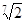 |
7 radiko 2 |
Log 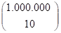 |
logi de 1.000.000 sobre 10 |
sen(45º) |
seno de 45 grado |
sen(2π) |
seno de 2 pi |
Símbolo |
Significado |
|
= |
estas |
Egala |
≠ |
estas |
Malegala |
> |
estas |
pli (= lit. mais) |
< |
estas |
malpli (= lit. menos) |
≥ |
estas |
pli kaj egala |
≤ |
estas |
malpli kaj egala |
≈ |
estas |
Proksimume |
Símbolo |
Significado |
|
sen |
sen |
Seno |
cos |
cos |
Coseno |
tg |
tg |
Tangente |
sec |
mSen |
Malseno |
cossec |
mCos |
Malcoseno |
cotg |
mTg |
Maltangente |
Os Numerais vão evoluir, porém, pode sofrer alterações posteriormente.
0
- NULO |
11
– UNUDEK UNU |
10
– UNUDEK |
100
– UNUCENT |
1
unu |
1.000
= 1.0001
- [unu
milunu;] |
Números maiores que 1.0009 segue a regra do infinito 1.000.000.000.000.000.000.000.000.000.000
= 1.00010
- [unu
mil10;] |
135
– [CENT TRIDEK KVIN;] |
EM DECIMAIS - tem duas regras: Regra 1)0,001 = 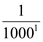 = SILUNU0,000.001 = 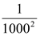 = SILDU0,000.000.001 = 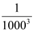 = SILTRI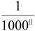 = SIL + [] |
|
Virgo |
Silunu |
Sildu |
Siltri |
Silkvar |
Silkvin |
Silses |
Silsep |
Silok |
Silnaŭ |
Sil10 |
Sil11 |
Sil12 |
Sill... |
|
RESULTADO |
0,22.3 |
0, |
223 |
|
|
|
|
|
|
|
|
|
|
|
|
|
[nulo virgo ducent-dudek-tri-silunu;] |
0,458.77 |
0, |
458 |
77[0] |
|
|
|
|
|
|
|
|
|
|
|
|
[nulo virgo kvarcent-kvindek-ok-silunu-sepcet-sepdek-sildu;] |
349,000.1 |
349, |
000 |
1[00] |
|
|
|
|
|
|
|
|
|
|
|
|
[tricent kvardek naw virgor unucent-sildu;] |
23,030.04 |
23, |
030 |
04[0] |
|
|
|
|
|
|
|
|
|
|
|
|
[dudek tri virgor tridek-silunu-kvardek-sildu;] |
52,200.7 |
52, |
200 |
7[00] |
|
|
|
|
|
|
|
|
|
|
|
|
[kvindek du virgor ducent-silunu-sepcent-sildu;] |
Regra 2)
Se
for difícil não precisa classificar os numerais decimais, ex:
346,1359873
Teoricamente:
Pronúncia na prática:
[tricent kvardek ses virgo unu tri kvin naŭ ok sep tri;]
Ki e a regra do infinito
Usa-se
a palavra ki quando o número for maior ou igual a (1.00010),
ou seja, segue a regra do infinito.
Exemplos:
1.00022
– ki unu mil-dudec-du
1.00035 – ki unu
mil-tridec-tri
3,258 x 1.00087 – ki tri
mil-ockdec-sep ducent kivindec ok mil-okdec-ses
NÚMEROS ORDINAISComo
já vimos, formam-se os ordinnais com o simples acrécimo de um
"A" (Observação: todo número ordinal é sempre
separado por hífen). Ex: |
Números |
Multiplicativos |
2 |
duoblo |
3 |
trioblo |
4 |
kvaroblo |
5 |
kvinoblo |
6 |
sesoblo |
7 |
sepoblo |
8 |
okoblo |
9 |
nawoblo |
|
|
10 |
unudek-oblo |
12 |
unudek-du-oblo |
27 |
dudek-sep-oblo |
Em
fração: 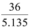 – [{tridek ses} divido {kvin-milunu-cent-tridek-kvin nn ono};] |
Em
porcentagem: |
Numeros de Lados |
Nomes |
3 |
triangulo |
4 |
kvarangulo |
5 |
kvinangulo |
6 |
sesangulo |
7 |
sepangulo |
8 |
oktangulo |
9 |
naŭangulo |
|
|
10 |
unudek-angulo |
12 |
unudek-du-angulo |
27 |
dudek-sep-angulo |
Em
número monetário: |
Química |
|||||
|
× 1 |
× 10 |
× 100 |
× 1.000x |
etc... |
1 |
Met |
Metdek |
Metcent |
Milmet |
|
2 |
Et |
Etdek |
Etcent |
Milet |
|
3 |
Prop |
Propdek |
Propcent |
Milprop |
|
4 |
But |
Butdek |
Butcent |
Milbut |
|
5 |
Pent |
Pentdek |
Pentcent |
Milpent |
|
6 |
Eks |
Eksdek |
Ekscent |
Mileks |
|
7 |
Ept |
Eptdek |
Eptcent |
Milept |
|
8 |
okt |
Oktdek |
Oktcent |
Milokt |
|
9 |
non |
Nondek |
Noncent |
Milnon |
|
Física
Curiosidade: |
|||
Em Esperanto: |
metro = metro |
kvadrata metro = metro quadrado |
kuba metro = metro cúbico |
|
|||
Em Esperantoskribo: |
metro = metro |
metro-kvadrata = metro quadrado |
metro-kuba = metro cúbico |
Obs. 1: o tipo de numeração usado em física é totalmente diferente da matemática.
Obs. 2: Na Eletrônica, por exemplo nos capacitores e outros componentes eletrônicos, o símbolo pode está dentro da numeração ou não, exemplo:
10 pF (dez picofarrad = 10 × 10-12)
2n18 F (2,18 nanofarrad = 2,18 × 10-9)
Números Matemáticos
Okcent kvardek mildu = 840 × 1.0002 = 840.000.000
Nulo komo tridec sep siltri = 0,307 × 1.000-3 = 0,000.000.037
Números Físicos
Quando se calcula números x<=1 e x>=-1
Usa-se a partícula ge
Okcent kvardek gedu = 840 × 102 = 84.000 = 8,4 g4
Quando se calcula números x>1 e x<-1
Usa-se a particula ege
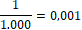
Nulo komo tricent sep egetri = 0,307 × 10-3 = 0,000.307 = 0,307 eg3
0,307 × 10-3 = Nulo komo tricent sep egetri = 0,307 × 10-3 = 0,307 eg3
0,035.345 eg8
0,234.523.453.245.234.563.264.575.683.636 eg125
0, |
035 |
345 |
|
eg8 |
||||||||
0, |
234 |
523 |
453 |
245 |
234 |
563 |
264 |
575 |
683 |
636 |
|
eg125 |
Física |
|||||||
0 = nulo |
× 1 |
× 10 |
× 100 |
× 10x |
|
× 10‑x |
etc... |
1 |
Unu |
Unudek |
Uncent |
Geunu |
|
Egeunu |
|
2 |
Du |
Dudek |
Ducent |
Gedu |
|
Egedu |
|
3 |
Tri |
Tridek |
Trecent |
Getri |
|
Egeri |
|
4 |
Kvar |
Kvardek |
Kvarcent |
Gekvar |
|
Egekvar |
|
5 |
Kvin |
Kvindek |
Kvincent |
Gekvin |
|
Egekin |
|
6 |
Ses |
Sesdek |
Sescent |
Geses |
|
Egeses |
|
7 |
Sep |
Sepdek |
Sepcent |
Gesep |
|
Egesep |
|
8 |
Ok |
Okdek |
Okcent |
Geok |
|
Egeok |
|
9 |
Naw |
Nawdek |
Nawcent |
Genaw |
|
Egenaw |
|
Física |
||||
Prefixo |
Símbolo |
Valor |
Simbolo |
Exemplos |
... |
||||
heksa |
E |
1018 |
g18 |
<<medida>> geunudek-ok |
peta |
P |
1015 |
g15 |
<<medida>> geunudek-kvin |
tera |
T |
1012 |
g12 |
<<medida>> geunudek-du |
giga |
G |
109 |
g9 |
Hz-g9 = Hertz genaw |
mega |
M |
106 |
g6 |
Hz-g6 = Hertz geses |
kilo |
k |
103 |
g3 |
m-g3 = metro getri |
hekto |
h |
102 |
g2 |
m-g2 = metro gedu |
deka |
da |
101 |
g1 |
m-g1 = metro geunu |
|
|
100 |
g0 |
m-g0 = metro genulo |
deci |
d |
10-1 |
eg1 |
m-eg1 = metro egeunu |
centi |
c |
10-2 |
eg2 |
m-eg2 = metro egedu |
mili |
m |
10-3 |
eg3 |
m-g3 = metro egetri |
micro |
µ |
10-6 |
eg6 |
<<medida>> egeses |
nano |
n |
10-9 |
eg9 |
<<medida>> enilnaw |
pico |
p |
10-12 |
eg12 |
<<medida>> egeunudek-du |
femto |
f |
10-15 |
eg15 |
<<medida>> egeunudek-kvin |
atto |
a |
10-18 |
eg18 |
<<medida>> egeunudek-ok |
... |
||||
Esperantoskript |
Vou
descrever como é possível criar um novo idioma com parâmetros
internacionais, chamado de “idioma simplificado” (futuro
Esperantoskript) .
O “idioma simplificado” é um nome
neutro. Ele significa “um idioma que se tornou simples, fácil,
claro”.
O
ato de falar vem desde a Pré-História.
O Egito, a Grécia, a
Mesopotâmia, a Babilônia, a China e outras civilizações antigas
contribuíram muito em nossa evolução. A escrita, o alfabeto, a
matemática foram criados e desenvolvidos por estas civilizações. O
idioma que falamos é a herança de civilizações antigas.
Hoje
em dia existem vários tipos de meios de comunicação. O rádio, a
televisão, o jornal, a revista... Vários países estão se
comunicando e todos eles têm a sua língua. A Internet está ligando
todos os países do mundo, e o inglês é o idioma oficial da
Internet.
Vejamos a figura abaixo:
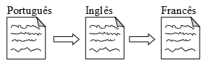
São
três textos iguais, sendo que em línguas diferentes. Isto é, o
texto que escrevi em português foi traduzido para o inglês. E um
francês pegou este mesmo texto escrito em inglês e traduziu para o
francês.
Traduzir um texto ou a fala não é nada fácil e nem
sempre a tradução sai perfeita, porque o inglês, o português e o
francês são línguas bem diferentes. Cada autor tem a sua maneira
de traduzir um livro.
Um exemplo bem simples é a Bíblia. A
Bíblia foi originalmente escrita em grego, hebraico e aramaico, com
posteriores traduções para o latim. Depois foi traduzida em vários
idiomas e é o livro mais editado do mundo.
Veja a figura acima.
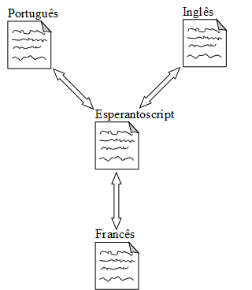
Teoricamente
nesta figura o inglês não fica mais no centro. Agora quem fica no
centro é um “idioma simplificado”. Temos também três textos
iguais, sendo que em línguas diferentes.
Porém com o “idioma
simplificado”, traduzir é melhor. Uma pergunta ficou no ar. Estou
criando um novo idioma?
A resposta é sim, mas, “o idioma não
é nada novo. Pois o idioma é a herança de outras civilizações
antigas.”
Ao longo da leitura explicarei o “idioma
simplificado”.
Observemos quatro idiomas: o japonês, o inglês, o espanhol e o português; em seguida analisaremos cada um.
Nós,
que somos brasileiros, já falamos português desde crianças. Nas
escolas estudamos substantivos, artigos, adjetivos, sujeito,
predicado, etc. Sabemos que cada um tem sua função:
O
substantivo dá nome a qualquer objeto;
O artigo complementa o
substantivo;
O adjetivo é o que dá qualidade ao
substantivo...
O português é o meio de comunicação entre
paulistas, cariocas, nordestinos, gaúchos, sertanejos. Se cada
estado tivesse a sua própria língua, não existiria o Brasil.
Nós
podemos fazer músicas, poesias, romances, livrinhos de histórias
infantis... Para nós que somos brasileiros, nosso idioma é muito
belo.
Quero focalizar a beleza de nosso idioma. Eu nunca vi um
brasileiro falar que o português é feio. É belo ouvir uma pessoa
que fala corretamente, um cantor que canta bem, um poeta que escreve
boas poesias, etc.
O português tem outro lado, um cantor que
canta mal, palavrões, jargão dos advogados, jargão de médicos,
etc. Se é feio para uns, é bonito para outros.
Acho
que a música americana é bonita, mas a fala e a escrita são feias,
em minha opinião.
O inglês tem uma grande vantagem em relação
ao português e o espanhol: sua gramática é fácil. Mas tem a
desvantagem de ter o vocabulário difícil em relação ao espanhol.
Outra vantagem, é uma língua dominante, ou seja, é um idioma
universal. Mesmo concorrendo contra o chinês e o espanhol.
Para
os brasileiros, a fala, a escrita e a música são belas. Tem a
vantagem de ter o vocabulário e a fala super fáceis. Tão fácil
que podemos entender um argentino, ou um paraguaio com um bom curso
de espanhol. Se tivermos dois belos romances, um escrito em inglês,
e o outro em espanhol, é óbvio que escolheríamos o espanhol.
Mas
tem a desvantagem de ter uma gramática difícil em relação ao
inglês. É concorrente do inglês, pois muitos países falam
espanhol.
Comparemos
o Brasil e o Japão. Eu sou brasileiro, e falo português. Lá no
Japão, eles falam japonês. Uma diferença entre Brasil e Japão é
o idioma.
Eu não entendo nada de japonês. Nem eles entendem
nada de português. Há uma barreira entre o português e o
japonês.
Se no Japão falasse ou português, ou inglês, ou
espanhol seria mais fácil. Ou se o Brasil falasse japonês também
seria mais fácil.
Como solucionar este grande problema?
Existem
cursos de japonês, tradutores de idiomas, um tradutor que fala
japonês, etc.
Podemos
juntar a beleza do português; a fala e os vocabulários super fáceis
do espanhol; a gramática fácil do inglês; o fato de ser um idioma
universal como o inglês; e a ideia de fazer com que lá no Japão
entendam o que os brasileiros falam.
Juntamos tudo em um só
idioma. Surge uma nova língua um “idioma simplificado”. Ela será
muito útil atualmente, onde a Internet está ligando todos os países
do mundo e a informação de um país rapidamente chega aos outros
países.
Agora
comparemos dois países de mesmo idioma: Brasil e Portugal. São dois
paises com o mesmo idioma, sendo que com sotaques diferentes. Os
portugueses falam “gajo”, querendo dizer “rapaz”; bucha, em
vez de “fila”’; golo, em vez de “gol”; “equipa”, por
‘time’; “guarda-redes”, por “goleiro”; “camisola” por
“camisa de jogador”; “baliza” por “trave”. (trecho
extraído do livro Meninos sem Pátria do autor Luiz Puntel).
Isso
também acontece com os estados do Brasil: cariocas, mineiros,
gaúchos, nordestinos, etc. cada estado tem seu sotaque. Vejamos:
Paulistanos |
Cariocas |
Zeladores |
Porteiros |
Pivete |
Trombadinha |
Guardadores |
Flanelinhas |
Funileiro |
Lanterneiro |
Nordestinos |
Paulistanos |
Macaxeira |
Mandioca |
Jerimum |
Abóbora |
Mexerica |
Tangerina |
O
idioma simplificado evita este tipo de regionalismo. Ou seja, só
haverá uma palavra para definir um objeto, tanto entre estados
quanto entre países de um mesmo idioma.
O estado em que se fala
bem o português aqui no Brasil é o estado do Maranhão.
Estrangeiros
(como italianos, franceses, argentinos, espanhóis, americanos,
ingleses) quem vêm para o Brasil com finalidades turísticas,
culturais, comerciais ou por querer trabalhar aqui, seja como for,
devem conhecer o nosso idioma, o português.
Nós reconhecemos
um estrangeiro pelo seu sotaque. Se prestarmos atenção a qualquer
estrangeiro, observaremos que eles não entendem certas palavras do
nosso idioma e de vez enquanto eles erram vocabulários. Esta
dificuldade do estrangeiro em aprender um idioma diferente é a mesma
dificuldade de um brasileiro em aprender o nosso idioma, que é o
português.
O português tem várias regras gramaticais: regras
de acentuação, divisão silábica, verbos regulares e irregulares,
o plural dos substantivos compostos, etc. Tanto a nossa gramática
quanto a gramática de outros idiomas são cheias de regras e
exceções.
1) Vejamos algumas exceções:
a) Usa-se X
depois de sílaba inicial en-:
Exemplo: enxurrada, enxame,
enxada, enxaqueca, enxoval, enxugar, etc.
Exceto as palavras
encher e encharcar e seus derivados.
b) Usa-se x depois da
sílaba me-.
Exemplo: mexer, mexerico, mexicano, mexerica,
etc.
Exceto a palavra mecha.
A
dificuldade de um idioma está relacionada a estes tipos de
exceções.
2) Vejamos algumas regras complicadas:
“Mecha
o feijão por alguns minutos e tampe.”
“Cortei uma mexa do
seu cabelo.”
“Mexa” e “mecha” neste caso, têm
sentidos diferentes. “Mexa” vem do verbo mexer. “Mecha”, que
é um substantivo, vem de mecha de cabelo. Neste caso o correto
é:
“Mexa o feijão por alguns minutos e tampe.”
“Cortei
uma mecha do seu cabelo.”
b) Observe outro exemplo:
“Porque
você não trabalha?”
“Você não vai a festa porque?”
“Só
viajo porque preciso.”
Neste caso (por que, por quê, porque e
porquê) estas palavras seguem regras ortográficas, onde:
Por
que é uma pergunta (?), equivale a por qual razão, ex.: “Por que
você não trabalha?”
Por quê é uma pergunta (?), usado em
final de frase, ex.: “Você não vai a festa por quê?”
Porque
não é usada em frases interrogativas, ex.: “Só viajo porque
preciso.”
Porquê neste caso é um substantivo, ele vem junto
com um artigo, ex: “O porquê da vida é um desafio.”
Em
sua opinião, o que é melhor: um dicionário grande ou um
minidicionário?
O tamanho do dicionário para o idioma
simplificado será do tamanho de um minidicionário. Para um país
falar com outro país não será necessário um dicionário grande.
As regras do idioma simplificado não são rígidas. As regras
são fáceis, claras e diretas.
Nós
estudamos muito a matemática nas escolas. Efetuamos cálculos de
divisão, adição, subtração e multiplicação. Exemplo: 4+5=9,
10x2=20, 5-3=2, 28/7=4.
Se analisarmos profundamente o
português, encontraríamos elementos semelhantes à matemática.
Vejamos alguns exemplos:
O plural dos substantivos é:
Elemento
+ s = Elementos
O masculino e o feminino de:
Artigo
masculino + adjetivo masculino + substantivo masculino = O bel+o
menin+o = O belo menino
Artigo feminino + adjetivo feminino +
substantivo feminino = A bel+a menin+a = A bela menina
A
primeira e a terceira pessoa do singular de:
Pronome pessoal na
1ª pessoa do singular + verbo na 1ª pessoa do singular + número
ordinal + substantivo plural = Eu compr+ei três caneta+s = Eu
comprei três canetas
Pronome pessoal na 3ª pessoa do singular
+ verbo na 3ª pessoa do singular + número ordinal + substantivo
plural = Ele compr+ou três caneta+s = Ele comprou três canetas
Este
tipo de metra exposto nos exemplos acima eu chamo de simetria, o
inverso eu chamo de assimetria.
Veja algumas simetrias em nossa
gramática:
1)Substantivo:
a)Gênero:
Masculino |
Feminino |
+O |
+A |
b)
Número
Singular |
Plural |
|
+S |
c)Grau
Diminutivo |
Aumentativo |
+inho, +inha, +inhos, +inhas |
+ão, +ã, +ãos, +ãs |
2)
Numeral
Cardinal |
Ordinal |
Multiplicativo |
Fracionário |
+enta, +centos |
+ésimo |
+uplo |
+avos |
3)
Verbo (alguns exemplos):
Passado |
Presente |
Futuro |
+ei |
+o |
+arei |
Gerúndio |
Particípio |
Infinitivo |
+ando |
+ado |
+ar |
Assimetria, que é o oposto, contém várias exceções; palavras irregulares; e o excesso de regras.
Expressões neutras, comuns nas redes sociais e entre membros da comunidade LGBTQIA+, representam pessoas não binárias e intersexo.
'Menine', 'todxs', 'amigues' são exemplos da linguagem ou dialeto neutro, que é conhecido também como linguagem não-binária.
A portaria da Secretaria da Cultura impedia que obras que recebem o incentivo da lei utilizem termos como "elu", "amigue", "namorade" e "todxs", que fazem parte da chamada linguagem de gênero neutro ou não-binária.
Cada vez mais comum nas redes sociais e entre membros da comunidade LGBTQIA+, essa linguagem tem como objetivo adaptar o português para o uso de expressões neutras, a fim de que as pessoas não binárias (que não se identificam nem com o gênero masculino nem com o feminino) ou intersexo se sintam representadas.
É a substituição dos artigos feminino e masculino por um "x", "e" ou até pela "@" em alguns casos. Assim, "amigo" ou "amiga" virariam "amigue" ou "amigx". As palavras "todos" ou "todas" seriam trocadas, da mesma forma, por "todes", "todxs" ou "tod@s". A mudança, como é popular principalmente na internet, ainda não tem um modelo definido.
Os defensores do gênero neutro também defendem a adoção do pronome "elu" para se referir a qualquer pessoa, independente do gênero, de maneira que abranja pessoas não-bináias ou intersexo que não se identifiquem como homem ou como mulher.
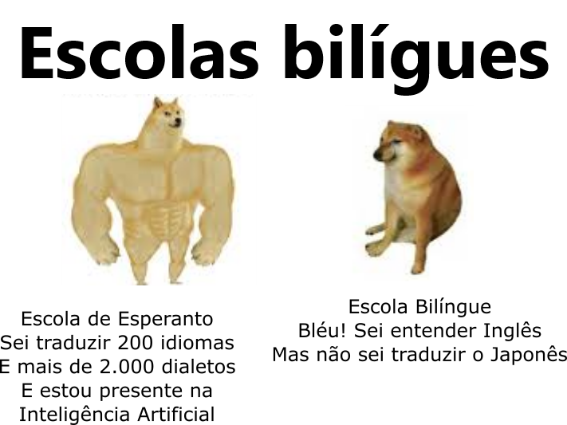